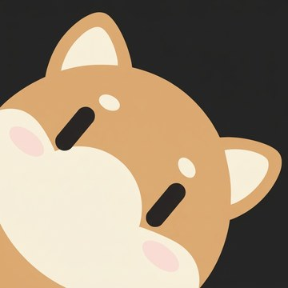

<!DOCTYPE html>
<html lang="en">
<head>
<meta charset="utf-8">
<meta name="viewport" content="width=device-width,initial-scale=1">
<title>Tee Tian Xiang · Backend Engineer</title>
<meta name="description" content="Tee Tian Xiang (ShibaInu0817), backend engineer. Experience, case studies, tools and skills.">
<meta name="theme-color" content="#121815">
<link rel="icon" href="data:image/svg+xml,%3Csvg xmlns='http://www.w3.org/2000/svg' viewBox='0 0 64 64'%3E%3Crect width='64' height='64' rx='14' fill='%23121815'/%3E%3Cg fill='none' stroke-width='6' stroke-linecap='round'%3E%3Cpath stroke='%23fff' d='M18 22h28M18 42h28'/%3E%3Cpath stroke='%2319a37f' d='M18 32h18'/%3E%3C/g%3E%3C/svg%3E">
<link rel="preconnect" href="https://fonts.googleapis.com">
<link rel="preconnect" href="https://fonts.gstatic.com" crossorigin>
<link href="https://fonts.googleapis.com/css2?family=Instrument+Sans:wght@400;500;600&family=JetBrains+Mono:wght@400;500&family=Noto+Sans+SC:wght@400;500&display=swap" rel="stylesheet">
<style>
/* Layout idea: a portfolio read one screen at a time. The dark cover drops away like a
   curtain, then each scroll step slides in one full page (about, case studies, games,
   tools, skills, contact) whose contents arrive in sequence. One accent, plain type. */
:root{
  color-scheme:light;
  --paper:#f5f6f3;
  --card:#ffffff;
  --ink:#121815;
  --dim:#626a66;
  --line:#dfe2dc;
  --accent:#0d7a5f;
  --accent-soft:#e2f2ec;
  --mint:#5fd0b1;       /* accent on dark */
  --sans:"Instrument Sans","Noto Sans SC",ui-sans-serif,system-ui,-apple-system,"Segoe UI",sans-serif;
  --mono:"JetBrains Mono",ui-monospace,Menlo,Consolas,monospace;
  --gutter:clamp(18px,4.5vw,64px);
  --ease:cubic-bezier(.22,.61,.36,1);
  --page:cubic-bezier(.77,0,.18,1);
}
*{box-sizing:border-box}
html,body{height:100%}
body{margin:0;background:var(--paper);color:var(--ink);font-family:var(--sans);font-size:16px;line-height:1.55;-webkit-font-smoothing:antialiased}
img,video{max-width:100%;display:block}
a{color:inherit}
button{font:inherit;color:inherit;cursor:pointer}
:focus-visible{outline:2px solid var(--accent);outline-offset:3px}
.on-dark :focus-visible,.cover :focus-visible{outline-color:#fff}
h1,h2,h3{font-weight:500;letter-spacing:-.035em;margin:0}
:lang(zh) h1,:lang(zh) h2,:lang(zh) h3{letter-spacing:-.01em}
.eyebrow{font-family:var(--mono);font-size:11.5px;letter-spacing:.1em;text-transform:uppercase;color:var(--dim)}
.wrap{width:100%;max-width:1200px;margin:0 auto;padding:0 var(--gutter)}

/* header + page rail */
.bar{position:fixed;inset:0 0 auto 0;z-index:40;color:var(--ink);transition:color .5s}
.bar .wrap{display:flex;align-items:center;gap:8px 24px;height:64px;max-width:none}
.brand{display:flex;align-items:center;gap:9px;text-decoration:none;font-weight:600;letter-spacing:-.02em;margin-right:auto}
.brand i{width:22px;height:22px;border-radius:6px;background:var(--ink);display:grid;place-items:center;transition:background .5s}
.brand i::before{content:"";width:11px;height:9px;border-block:2px solid #fff;background:linear-gradient(#19a37f,#19a37f) left center/7px 2px no-repeat}
.links{display:flex;gap:22px}
.links a{text-decoration:none;font-size:14px;font-weight:500;opacity:.6;padding:6px 0;transition:opacity .2s}
.links a:hover,.links a.on{opacity:1}
.seg{display:flex;border:1px solid var(--line);border-radius:8px;overflow:hidden;transition:border-color .5s}
.seg button{border:0;background:none;padding:5px 9px;font-size:12px;font-weight:500;opacity:.65}
.seg button[aria-pressed="true"]{background:var(--ink);color:#fff;opacity:1}
.email{border:1px solid var(--line);border-radius:8px;background:none;padding:5px 11px;font-size:13px;font-weight:500;transition:border-color .2s}
.email i{font-style:normal}
.email:hover{border-color:currentColor}
.on-dark .email{border-color:rgba(255,255,255,.28)}
.email{color:inherit;text-decoration:none}
.on-dark .bar{color:#fff}
.on-dark .brand i{background:#2b3631}
.on-dark .seg{border-color:rgba(255,255,255,.28)}
.on-dark .seg button[aria-pressed="true"]{background:#fff;color:var(--ink)}
.rail{position:fixed;z-index:40;right:clamp(10px,1.6vw,24px);top:50%;translate:0 -50%;display:none;flex-direction:column;gap:2px;color:var(--ink);transition:color .5s}
.on-dark .rail{color:#fff}
.rail button{display:flex;align-items:center;justify-content:flex-end;gap:10px;border:0;background:none;padding:6px 0;font-family:var(--mono);font-size:10.5px;letter-spacing:.06em;opacity:.45;transition:opacity .25s}
.rail button{position:relative}
.rail button span{position:absolute;right:calc(100% + 10px);top:50%;margin-top:-.75em;opacity:0;translate:6px 0;transition:opacity .25s,translate .25s;white-space:nowrap;pointer-events:none;background:var(--paper);color:var(--ink);padding:1px 7px;border-radius:5px;box-shadow:0 0 0 1px var(--line)}
.rail button::after{content:"";width:14px;height:2px;border-radius:2px;background:currentColor;transition:width .35s var(--ease),background .35s}
.rail button:hover,.rail button.on{opacity:1}
.rail button:hover span,.rail button:focus-visible span{opacity:1;translate:0 0}
.rail button.on::after{width:28px;background:#19a37f}

/* buttons, tags */
.btn{display:inline-flex;align-items:center;gap:8px;border:1px solid var(--ink);border-radius:10px;padding:10px 17px;font-size:14.5px;font-weight:500;text-decoration:none;background:var(--ink);color:#fff;transition:translate .2s var(--ease),background .2s,border-color .2s}
.btn:hover{background:#26302b;translate:0 -1px}
.btn.ghost{background:transparent;color:var(--ink);border-color:var(--line)}
.btn.ghost:hover{border-color:var(--ink);background:transparent}
.dark .btn{background:#fff;color:var(--ink);border-color:#fff}
.dark .btn:hover{background:#e8ebe6}
.dark .btn.ghost{background:transparent;color:#fff;border-color:rgba(255,255,255,.3)}
.dark .btn.ghost:hover{border-color:#fff;background:transparent}
.sm{display:inline-flex;align-items:center;gap:6px;border:1px solid var(--line);background:var(--card);border-radius:8px;padding:6px 11px;font-size:13px;font-weight:500;text-decoration:none}
.sm:hover{border-color:var(--ink)}
.sm.main{background:var(--accent);border-color:var(--accent);color:#fff}
.sm.main:hover{background:#0a6851;border-color:#0a6851}
.tag{font-family:var(--mono);font-size:10px;letter-spacing:.05em;text-transform:uppercase;border-radius:5px;padding:2px 7px;background:#eceee9;color:var(--dim);white-space:nowrap}

/* pages: natural flow by default; html.paged turns them into full screens */
.cover{position:relative;min-height:100svh;background:var(--ink);color:#fff;overflow:hidden;display:flex;flex-direction:column}
.cover::before{content:"";position:absolute;inset:0;background:radial-gradient(60% 55% at 78% 8%,rgba(25,163,127,.22),transparent 70%);pointer-events:none}
.page{position:relative;background:var(--paper)}
.page.dark{background:var(--ink);color:#fff}
.page + .page{border-top:1px solid var(--line)}
.pg{padding:clamp(64px,10vw,110px) 0}
.pg>.wrap{margin-block:auto}
html:not(.paged) .bar{position:absolute}
.paged body{overflow:hidden}
.paged .cover{position:fixed;inset:0;z-index:20;min-height:0;height:100%;transition:transform 1100ms cubic-bezier(.7,0,.2,1),box-shadow 1100ms;box-shadow:0 24px 60px rgba(8,20,15,.35);will-change:transform}
.paged .cover.away{transform:translateY(102%)}
.paged #pages{position:fixed;inset:0;z-index:1;transition:transform 1000ms var(--page);will-change:transform}
.paged .page{height:100vh;border:0}
.paged .pg{height:100%;overflow-y:auto;overscroll-behavior:contain;display:flex;flex-direction:column;padding:78px 0 34px;scrollbar-width:thin}
.paged .rail{display:flex}
.paged .pg>.wrap{padding-right:max(var(--gutter),84px)}

/* entrance: contents arrive in sequence the first time a page is reached */
[data-a]{--d:0}
.stage:not(.in) [data-a]{opacity:0;transform:translateY(28px)}
.stage.in [data-a]{transition:opacity .8s var(--ease),transform .8s var(--ease),translate .35s var(--ease);transition-delay:calc(var(--d)*85ms + var(--base,0ms)),calc(var(--d)*85ms + var(--base,0ms)),0s}
.stage:not(.in) .w{opacity:0;transform:translateY(.7em) rotateX(-55deg);filter:blur(10px)}
.w{display:inline-block;transform-origin:50% 100%}
.stage.in .w{transition:opacity .7s var(--ease),transform .7s var(--ease),filter .7s var(--ease);transition-delay:calc(var(--i)*38ms + var(--base,0ms))}
.stage:not(.in) .clip{clip-path:inset(0 0 100% 0)}
.stage:not(.in) .clip img{transform:scale(1.12)}
.clip{clip-path:inset(0)}
.stage.in .clip{transition:clip-path 1.1s var(--page);transition-delay:calc(var(--d)*85ms + var(--base,0ms))}
.stage.in .clip img{transition:transform 1.4s var(--ease);transition-delay:calc(var(--d)*85ms + var(--base,0ms))}
.stage.now [data-a],.stage.now .w,.stage.now .clip,.stage.now .clip img{transition:none!important}

/* cover */
.cover .inner{position:relative;flex:1;display:flex;align-items:center;padding:84px 0 0}
.hint{bottom:14px}
.who{display:flex;align-items:center;gap:10px;font-size:15px;color:rgba(255,255,255,.75)}
.who b{color:#fff;font-weight:600}
.who i{width:8px;height:8px;border-radius:50%;background:#19a37f;box-shadow:0 0 0 4px rgba(25,163,127,.25)}
.cover .hi{margin:20px 0 0;font-size:clamp(19px,2.1vw,30px);font-weight:500;letter-spacing:-.025em;color:rgba(255,255,255,.72)}
.cover h1{font-size:clamp(30px,4vw,60px);line-height:1.06;letter-spacing:-.045em;max-width:21em;margin-top:8px;perspective:800px;text-wrap:balance}
.cover h1 .num{display:inline-block;font-variant-numeric:tabular-nums;white-space:nowrap}
.cover h1 em{font-style:normal;color:var(--mint)}
:lang(zh) .cover h1{font-size:clamp(28px,3.9vw,56px);line-height:1.22}
.cover .sub{margin:20px 0 0;max-width:54ch;font-size:clamp(15.5px,1.3vw,18px);color:rgba(255,255,255,.72)}
.cover .btns{display:flex;flex-wrap:wrap;gap:10px;margin-top:26px}
.peek{position:relative;display:grid;grid-template-columns:repeat(5,minmax(0,1fr));gap:clamp(8px,1.2vw,16px);margin:clamp(20px,4vh,48px) auto -3%;padding:0 var(--gutter);width:100%;max-width:1200px;flex:none}
.peek button{border:0;padding:0;border-radius:12px 12px 0 0;overflow:hidden;aspect-ratio:16/12;background:#121815;box-shadow:0 -10px 40px rgba(0,0,0,.35);transition:translate .35s var(--ease)}
.peek button:hover,.peek button:focus-visible{translate:0 -10px}
.peek img{width:100%;height:100%;object-fit:cover;object-position:top}
.hint{position:absolute;left:50%;bottom:16px;translate:-50% 0;z-index:2;display:none;align-items:center;gap:8px;border:0;border-radius:99px;background:rgba(18,24,21,.72);backdrop-filter:blur(8px);color:#fff;padding:7px 14px;font-family:var(--mono);font-size:11px;letter-spacing:.08em}
.hint i{width:1px;height:16px;background:linear-gradient(#19a37f 50%,rgba(255,255,255,.3) 50%) 0 0/100% 200%;animation:cue 1.8s ease-in-out infinite}
.paged .hint{display:inline-flex}
@keyframes cue{from{background-position:0 100%}to{background-position:0 -100%}}

/* shared page type */
.page h2{font-size:clamp(28px,3.6vw,48px);line-height:1.06;max-width:17em;margin-top:10px;perspective:800px}
.lead{color:var(--dim);font-size:17px;max-width:56ch;margin:14px 0 0}

/* about */
.about{display:grid;grid-template-columns:minmax(0,1fr) minmax(0,1fr);gap:clamp(28px,6vw,96px);align-items:start}
.about p{margin:16px 0 0;color:var(--dim);font-size:17px;max-width:52ch}
.xp{display:grid;border-top:1px solid var(--ink)}
.xp article{display:grid;grid-template-columns:92px minmax(0,1fr);gap:16px;padding:18px 0;border-bottom:1px solid var(--line)}
.xp .when{font-family:var(--mono);font-size:11px;letter-spacing:.08em;text-transform:uppercase;color:var(--accent);padding-top:5px}
.xp h3{font-size:21px}
.xp h3 span{color:var(--dim);font-weight:400;letter-spacing:-.01em;font-size:16px;margin-left:8px}
.xp p{margin:6px 0 0;font-size:15px;max-width:none}
.xp .edu{margin:16px 0 0;font-size:14px;color:var(--dim)}
.xp .edu b{display:block;font-family:var(--mono);font-size:11px;font-weight:400;letter-spacing:.08em;text-transform:uppercase;color:var(--accent);margin-bottom:4px}
.nums{display:grid;grid-template-columns:repeat(3,minmax(0,1fr));gap:16px;margin-top:clamp(28px,5vh,56px);padding-top:18px;border-top:1px solid var(--line)}
.nums dt{font-size:clamp(34px,4.4vw,58px);font-weight:500;letter-spacing:-.05em;line-height:1;font-variant-numeric:tabular-nums}
.nums dd{margin:6px 0 0;color:var(--dim);font-size:14px;max-width:26ch}

/* case study page */
.case{display:grid;grid-template-columns:minmax(0,1.08fr) minmax(0,1fr);gap:clamp(24px,4.5vw,72px);align-items:center}
.case.flip .media{order:2}
.media{position:relative}
.media .clip{display:block;width:100%;border:0;padding:0;border-radius:16px;overflow:hidden;aspect-ratio:16/10;background:#121815;box-shadow:0 30px 60px -34px rgba(18,24,21,.55)}
.media img{width:100%;height:100%;object-fit:contain}
.media .more{display:flex;gap:8px;margin-top:10px}
.media .more button{flex:0 0 calc(25% - 6px);border:0;padding:0;border-radius:8px;overflow:hidden;aspect-ratio:16/10;background:#121815;opacity:.8}
.media .more button:hover{opacity:1}
.media .more img{object-fit:cover}
.case h2{font-size:clamp(28px,3.4vw,46px)}
.case .ov{margin:12px 0 0;color:var(--dim);font-size:16px;max-width:52ch}
.pts{margin:16px 0 0;padding:0;list-style:none;counter-reset:n;display:grid;gap:9px;border-top:1px solid var(--line);padding-top:14px}
.pts li{counter-increment:n;display:grid;grid-template-columns:30px 1fr;font-size:14.5px;line-height:1.45}
.pts li::before{content:counter(n,decimal-leading-zero);font-family:var(--mono);font-size:11.5px;color:var(--accent);padding-top:2px}
.res{margin:14px 0 0;padding:11px 14px;border-radius:10px;background:var(--accent-soft);color:#0a4d3c;font-size:14.5px;font-weight:500}
.tokens{display:flex;flex-wrap:wrap;gap:6px;margin-top:14px}
.tokens span{border:1px solid var(--line);border-radius:6px;padding:2px 8px;font-family:var(--mono);font-size:11.5px;background:var(--card)}
.case .acts{margin-top:18px;padding:0}

.rows{margin:14px 0 0;display:grid;gap:9px;border-top:1px solid var(--line);padding-top:13px}
.rows div{display:grid;grid-template-columns:118px minmax(0,1fr);gap:12px;font-size:14.5px;line-height:1.45}
.rows dt{font-family:var(--mono);font-size:10.5px;letter-spacing:.08em;text-transform:uppercase;color:var(--accent);padding-top:3px}
.rows dd{margin:0}
@media(max-width:520px){.rows div{grid-template-columns:1fr;gap:2px}}

/* card pages */
.head{display:flex;align-items:flex-end;justify-content:space-between;gap:20px;flex-wrap:wrap}
.cards{display:grid;gap:clamp(12px,1.6vw,22px);margin-top:clamp(20px,3.4vh,36px);grid-template-columns:repeat(var(--n,3),minmax(0,1fr))}
.card{border:1px solid var(--line);border-radius:16px;overflow:hidden;background:var(--card);display:flex;flex-direction:column}
.card .lift{display:flex;flex-direction:column;flex:1;transition:translate .3s var(--ease)}
.card:hover{box-shadow:0 22px 44px -26px rgba(18,24,21,.45)}
.shot{position:relative;display:block;width:100%;border:0;padding:0;aspect-ratio:16/10;background:#121815;overflow:hidden}
.shot img{width:100%;height:100%;object-fit:cover;transition:scale .6s var(--ease)}
.card:hover .shot img{scale:1.04}
.shot.fit img{object-fit:contain}
.shot .tag{position:absolute;left:10px;top:10px;background:rgba(255,255,255,.94);color:var(--ink)}
.card .txt{padding:15px 17px 17px;display:flex;flex-direction:column;gap:6px;flex:1}
.card h3{font-size:21px;line-height:1.15}
.card p{margin:0;color:var(--dim);font-size:14.5px}
.acts{display:flex;flex-wrap:wrap;gap:8px;margin-top:auto;padding-top:12px}

/* skills */
.groups{display:grid;gap:clamp(12px,2.4vh,26px) clamp(24px,4vw,56px);grid-template-columns:repeat(3,minmax(0,1fr));margin-top:clamp(14px,2.6vh,30px)}
.group h3{font-family:var(--mono);font-size:11px;font-weight:500;letter-spacing:.12em;color:var(--accent);padding-bottom:9px;border-bottom:1px solid var(--ink)}
.group ul{margin:0;padding:0;list-style:none}
.group li{display:flex;align-items:baseline;gap:8px;padding:5px 0;border-bottom:1px solid var(--line);font-size:14.5px;font-weight:500}
.group li small{font-family:var(--mono);font-weight:400;font-size:11px;color:var(--dim)}
.used{display:inline-flex;gap:4px;margin-left:auto}
.used button{border:0;background:var(--accent-soft);color:var(--accent);border-radius:5px;padding:1px 6px;font-family:var(--mono);font-size:10px}
.used button:hover{background:var(--accent);color:#fff}

/* about: an orbit of what I work on, around my picture */
.orbit{display:grid;gap:20px;justify-items:center;padding:0 var(--gutter)}
.orbit .stagebox2{position:relative;order:2;width:min(100%,520px);aspect-ratio:1;container-type:inline-size;--tw:21%}
.paged .orbit{display:block;position:relative;flex:1;min-height:0;width:100%;padding:0}
.paged .orbit .stagebox2{position:absolute;left:50%;top:50%;width:min(74vh,640px,58vw);translate:-50% -52%;--tw:17.5%}
.orbit .ring{position:absolute;inset:0}
.tile{position:absolute;left:50%;top:50%;width:var(--tw);aspect-ratio:1;border:0;background:none;padding:0;display:grid;place-items:center;color:var(--t,#fff);will-change:transform}
.tile::before{content:"";position:absolute;inset:0;border-radius:30%;background:var(--c,#121815);rotate:var(--rot,0deg);box-shadow:0 18px 34px -14px rgba(18,24,21,.45),inset 0 0 0 1px rgba(18,24,21,.08);transition:scale .3s var(--ease),box-shadow .3s}
.tile span{position:relative;max-width:84%;font-size:clamp(9.5px,2.5cqw,14px);font-weight:600;letter-spacing:-.02em;line-height:1.12;text-align:center;text-wrap:balance;overflow-wrap:anywhere}
.tile.has-logo{align-content:center;gap:6%}
.tile.has-logo img{position:relative;width:42%;aspect-ratio:1;object-fit:contain}
.tile.has-logo span{font-size:clamp(8.5px,2.1cqw,12.5px)}
.tile:hover::before,.tile:focus-visible::before,.tile.pin::before{scale:1.1;box-shadow:0 24px 44px -14px rgba(18,24,21,.55),inset 0 0 0 2px var(--accent)}
.tile:focus-visible{outline:none}
.core{position:absolute;left:50%;top:50%;translate:-50% -50%;display:grid;justify-items:center;gap:10px;text-align:center;pointer-events:none;width:46%}
.core img{width:clamp(64px,19cqw,124px);aspect-ratio:1;object-fit:cover;border-radius:28%;box-shadow:0 22px 40px -16px rgba(18,24,21,.6)}
.core b{font-size:clamp(15px,4cqw,24px);font-weight:500;letter-spacing:-.03em;line-height:1.1}
.core small{font-family:var(--mono);font-size:11px;letter-spacing:.12em;text-transform:uppercase;color:var(--dim)}
.orbit .title{order:1;justify-self:start}
.paged .orbit .title{position:absolute;left:var(--gutter);bottom:0;max-width:26vw}
.paged .orbit .title h2{font-size:clamp(26px,3.4vw,46px)}
.orbit .title p{margin:10px 0 0;color:var(--dim);font-size:15.5px;max-width:34ch}
.pills{order:3;display:flex;flex-wrap:wrap;justify-content:center;gap:8px}
.paged .pills{position:absolute;right:calc(var(--gutter) + 44px);top:50%;translate:0 -50%;flex-direction:column;flex-wrap:nowrap;align-items:flex-end}
.pills button{border:1px solid var(--line);background:var(--card);border-radius:12px;padding:8px 14px;font-size:14.5px;font-weight:500;white-space:nowrap;transform-origin:100% 50%;transition:opacity .35s,scale .35s var(--ease),background .25s,color .25s,border-color .25s}
.paged .pills button{opacity:calc(1 - var(--far,0)*.22);scale:calc(1 - var(--far,0)*.04)}
.pills button:hover{border-color:var(--ink)}
.paged .pills button:hover,.paged .pills button[aria-pressed="true"]{opacity:1}
.pills button[aria-pressed="true"]{background:var(--ink);border-color:var(--ink);color:#fff}
.info{order:4;width:min(100%,520px);border:1px solid var(--line);background:var(--card);border-radius:16px;padding:13px 16px;min-height:86px}
.paged .info{position:absolute;right:calc(var(--gutter) + 44px);bottom:0;width:min(320px,26vw)}
.info b{display:block;font-weight:500;font-size:17px;letter-spacing:-.02em}
.info b small{font-family:var(--mono);font-weight:400;font-size:11px;color:var(--dim);margin-left:8px}
.info p{margin:3px 0 0;color:var(--dim);font-size:13.5px;line-height:1.45}
.info .used,.info .sm{margin:8px 0 0}
.group .used{margin-left:auto}

.orbit .lines{display:none}
.paged .orbit .lines{display:flex;justify-content:space-between;position:absolute;inset:-78px 8% -34px;pointer-events:none}
.orbit .lines i{width:1px;background:repeating-linear-gradient(180deg,rgba(18,24,21,.1) 0 4px,transparent 4px 8px)}
.orbit .lines b{position:absolute;left:-12%;right:-12%;top:calc(48% + 22px);height:1px;background:repeating-linear-gradient(90deg,rgba(18,24,21,.13) 0 6px,transparent 6px 10px)}
.ch{display:inline-block;transform-origin:50% 100%}
#about:not(.in) .lines{opacity:0}
#about.in .lines{transition:opacity 1.2s ease var(--base,0ms)}
#about:not(.in) .core img{opacity:0;transform:scale(.001) translateY(40px)}
#about.in .core img{transition:transform 1700ms cubic-bezier(.34,1.45,.64,1) var(--base,0ms),opacity 1000ms ease var(--base,0ms)}
#about:not(.in) .core b,#about:not(.in) .core small{opacity:0;transform:translateY(22px)}
#about.in .core b,#about.in .core small{transition:opacity 1200ms ease,transform 1200ms cubic-bezier(.34,1.35,.64,1);transition-delay:calc(var(--base,0ms) + 1200ms)}
#about.in .core small{transition-delay:calc(var(--base,0ms) + 1460ms)}
#about:not(.in) .title .eyebrow,#about:not(.in) .title p{opacity:0;transform:translateY(22px)}
#about.in .title .eyebrow,#about.in .title p{transition:opacity .8s ease,transform .8s var(--ease);transition-delay:calc(var(--base,0ms) + 1200ms)}
#about.in .title p{transition-delay:calc(var(--base,0ms) + 2300ms)}
#about.in .title p.ai{transition-delay:calc(var(--base,0ms) + 2600ms)}
.orbit .title p.ai{color:var(--ink)}
#about:not(.in) .ch{opacity:0;transform:translateY(.9em) rotateX(-70deg) scale(.9);filter:blur(14px)}
#about.in .ch{transition:opacity .45s var(--ease),transform .45s var(--ease),filter .45s var(--ease);transition-delay:calc(var(--base,0ms) + 1700ms + var(--i)*19ms)}
#about:not(.in) .info{opacity:0}
#about.in .info{animation:pillpop 1.1s var(--ease) calc(var(--base,0ms) + 1500ms) both}
@keyframes pillpop{0%{opacity:0;scale:0}40%{opacity:1}70%{scale:1.06}100%{opacity:1;scale:1}}
#about.now .lines,#about.now .core *,#about.now .title *,#about.now .ch,#about.now .info{transition:none!important;animation:none!important}
.paged .orbit .stagebox2{--tw:20.5%}
.paged .orbit .title{z-index:1}

/* contact */
.contact h2{font-size:clamp(40px,7vw,104px);line-height:1;letter-spacing:-.05em;max-width:none}
.contact h2 em{font-style:normal;color:var(--mint)}
.contact .lead{color:rgba(255,255,255,.7)}
.contact .btns{display:flex;flex-wrap:wrap;gap:10px;margin-top:28px}
.contact small{display:block;margin-top:clamp(36px,7vh,80px);padding-top:16px;border-top:1px solid rgba(255,255,255,.14);font-family:var(--mono);font-size:11px;letter-spacing:.06em;color:rgba(255,255,255,.55)}
.dark .eyebrow{color:rgba(255,255,255,.6)}

/* project sheet */
#sheet{border:0;padding:0;margin:0;width:100%;height:100%;max-width:none;max-height:none;background:rgba(18,24,21,.6);backdrop-filter:blur(8px);overflow-y:auto;color:var(--ink);font-family:var(--sans)}
#sheet::backdrop{background:transparent}
.paper{max-width:1120px;margin:clamp(0px,3vw,40px) auto;background:var(--paper);border-radius:20px;overflow:hidden;box-shadow:0 40px 90px rgba(0,0,0,.4);animation:rise .45s var(--ease) both}
@keyframes rise{from{opacity:0;transform:translateY(18px)}}
.top{position:sticky;top:0;z-index:3;display:flex;align-items:center;gap:12px;padding:12px clamp(16px,3vw,30px);background:rgba(245,246,243,.95);border-bottom:1px solid var(--line)}
.top .eyebrow{margin-right:auto}
.body{padding:clamp(18px,3vw,34px) clamp(16px,3vw,30px);display:grid;gap:clamp(20px,3vw,34px)}
#sheet h2{font-size:clamp(32px,5vw,56px);letter-spacing:-.045em;line-height:1.02;margin-bottom:8px}
#sheet .sum{margin:0;color:var(--dim);font-size:18px;max-width:58ch}
.viewer{display:grid;grid-template-columns:minmax(0,2.1fr) minmax(210px,1fr);gap:clamp(18px,3vw,30px);align-items:start}
.stagebox{aspect-ratio:16/10;display:grid;place-items:center;background:#0b0907;border-radius:14px;overflow:hidden}
.stagebox img,.stagebox video{width:100%;height:100%;object-fit:contain}
.cap{display:flex;align-items:center;gap:10px;padding:10px 2px;font-size:14px}
.cap .t{margin-right:auto}
.cap .no{font-family:var(--mono);font-size:11px;color:var(--dim);white-space:nowrap;font-variant-numeric:tabular-nums}
.cap button{width:30px;height:30px;border-radius:50%;border:1px solid var(--line);background:var(--card);line-height:1}
.cap button:hover{border-color:var(--ink)}
.thumbs{display:flex;gap:8px;overflow-x:auto;padding:2px}
.thumbs button{position:relative;flex:0 0 82px;aspect-ratio:16/10;padding:0;border:0;border-radius:7px;overflow:hidden;background:#0b0907;opacity:.55;outline:2px solid transparent}
.thumbs button[aria-current="true"]{opacity:1;outline-color:var(--accent)}
.thumbs button:hover{opacity:1}
.thumbs img{width:100%;height:100%;object-fit:cover}
.thumbs span{position:absolute;inset:0;display:grid;place-items:center;color:#fff;text-shadow:0 1px 6px #000}
.facts{margin:0;display:grid}
.facts div{border-top:1px solid var(--line);padding:9px 0}
.facts dt{font-family:var(--mono);font-size:10px;letter-spacing:.1em;color:var(--dim)}
.facts dd{margin:0;font-weight:500;font-size:14.5px}
.sidecol{display:grid;gap:16px}
.read{display:grid;grid-template-columns:repeat(auto-fit,minmax(min(100%,300px),1fr));gap:24px clamp(24px,4vw,52px)}
.read h3{margin:0 0 8px;font-family:var(--mono);font-size:11px;font-weight:500;letter-spacing:.12em;text-transform:uppercase;color:var(--accent)}
.read p{margin:0;max-width:60ch}
.read ol{margin:0;padding:0;list-style:none;counter-reset:n;display:grid;gap:10px}
.read li{counter-increment:n;display:grid;grid-template-columns:28px 1fr}
.read li::before{content:counter(n,decimal-leading-zero);font-family:var(--mono);font-size:12px;color:var(--accent);padding-top:3px}
.story{display:grid;gap:30px;max-width:66ch;margin:0 auto 6px;width:100%}
.story section{display:grid;gap:12px;justify-items:start}
.story h3{margin:0;font-family:var(--sans);font-size:22px;font-weight:500;letter-spacing:-.03em;text-transform:none;color:var(--ink)}
.story p{margin:0;font-size:17px;line-height:1.65;color:#2c3531}
.story ul{margin:0;padding-left:20px;display:grid;gap:8px}
.story li{font-size:16.5px;line-height:1.55;color:#2c3531}
.story li::marker{color:var(--accent)}
.story .sm{margin-top:4px}
.sumbox{border-top:1px solid var(--line);padding-top:14px}
.sumbox + .acts{padding-top:2px!important}
.sumbox h3{margin:0 0 4px;font-family:var(--mono);font-size:11px;font-weight:500;letter-spacing:.12em;text-transform:uppercase;color:var(--dim)}
.sumbox .rows{margin:0;border:0;padding:0;gap:12px}
.sumbox .rows div{grid-template-columns:1fr;gap:2px}
.sumbox .rows dd{font-size:14.5px;line-height:1.5}
/* omnichannel inbox animation */
.ibx-host{position:relative;width:100%;height:100%;background:#121815;container-type:inline-size;border-radius:inherit;overflow:hidden;text-align:left}
.ibx{position:absolute;inset:0;display:grid;grid-template-columns:31% 1fr;gap:6%;align-items:center;padding:6% 6.5%;color:#f2f5f2;font-family:var(--sans)}
.ibx-chs{display:grid;gap:clamp(5px,1.6cqw,10px)}
.ibx-ch{position:relative;display:flex;align-items:center;gap:8px;background:#1c2521;border:1px solid #2f3b35;border-radius:10px;padding:clamp(5px,1.5cqw,9px) clamp(7px,2cqw,12px);font-size:clamp(9px,2.1cqw,13px);font-weight:500;transition:border-color .3s,background .3s}
.ibx-ch i{flex:none;width:8px;height:8px;border-radius:50%;background:var(--cc)}
.ibx-ch b{margin-left:auto;font-weight:500;font-size:.85em;color:var(--cc);opacity:0;transition:opacity .3s}
.ibx-ch.ping{border-color:var(--cc)}
.ibx-ch.sent{border-color:var(--cc);background:#20302a}
.ibx-ch.sent b{opacity:1}
.ibx-box{background:#f5f6f3;color:#121815;border-radius:14px;height:88%;display:flex;flex-direction:column;overflow:hidden;box-shadow:0 20px 40px -20px rgba(0,0,0,.6)}
.ibx-head{display:flex;align-items:baseline;justify-content:space-between;padding:clamp(8px,2.4cqw,14px) clamp(10px,2.8cqw,16px);border-bottom:1px solid #dfe2dc;font-size:clamp(10px,2.3cqw,14px)}
.ibx-head span{font-family:var(--mono);font-size:.78em;color:#626a66}
.ibx-head em{font-style:normal;color:#0d7a5f;font-weight:600}
.ibx-list{flex:1;overflow:hidden;padding:clamp(4px,1.2cqw,8px)}
.ibx-row{display:grid;grid-template-columns:auto 1fr;gap:0 10px;align-items:start;padding:clamp(5px,1.4cqw,9px) clamp(6px,1.6cqw,10px);border-radius:10px;border-left:3px solid var(--cc);margin-bottom:4px;background:#fff;transition:background .3s,box-shadow .3s}
.ibx-row.sel{background:#e2f2ec;box-shadow:inset 0 0 0 1px #b9e3d4}
.ibx-av{width:clamp(18px,4.4cqw,26px);aspect-ratio:1;border-radius:50%;background:#121815;color:#fff;display:grid;place-items:center;font-size:clamp(8px,1.9cqw,11px);font-weight:600}
.ibx-row b{display:flex;gap:6px;align-items:baseline;font-size:clamp(9px,2cqw,12.5px)}
.ibx-row b small{font-family:var(--mono);font-weight:400;font-size:.8em;color:#626a66}
.ibx-row p{margin:1px 0 0;font-size:clamp(8.5px,1.9cqw,12px);color:#3a4440;white-space:nowrap;overflow:hidden;text-overflow:ellipsis}
.ibx-reply{grid-column:2;margin-top:5px;justify-self:end;max-width:92%;background:#121815;color:#fff;border-radius:10px 10px 2px 10px;padding:4px 9px;font-size:clamp(8.5px,1.9cqw,12px)}
.ibx-reply span{display:block;font-family:var(--mono);font-size:.75em;color:#5fd0b1}
.ibx-dot{position:absolute;left:0;top:0;width:10px;height:10px;margin:-5px 0 0 -5px;border-radius:50%;box-shadow:0 0 12px currentColor;pointer-events:none;z-index:3}
.media .clip.ibx-clip{background:#121815}
.stagebox .ibx-host{border-radius:14px}
.ibx-ch{white-space:nowrap}
@container (max-width:560px){.ibx-ch b{display:none}}
@media(max-width:600px){.media .clip.ibx-clip,.stagebox:has(.ibx-host){aspect-ratio:4/3}.ibx{gap:5%;padding:5% 5%}}
.story figure{margin:6px 0 0;display:grid;gap:6px;width:100%}
.story figure img{width:100%;border-radius:12px;background:#121815}
.story figcaption{font-family:var(--mono);font-size:11px;letter-spacing:.06em;color:var(--dim)}
.pager{display:flex;justify-content:space-between;gap:12px;flex-wrap:wrap;border-top:1px solid var(--line);padding-top:16px}
.pager button{border:0;background:none;padding:4px 0;color:var(--dim);text-align:left;font-size:13px}
.pager button:hover b{color:var(--accent)}
.pager b{display:block;color:var(--ink);font-size:19px;font-weight:500;letter-spacing:-.03em}
.pager button:last-child{text-align:right;margin-left:auto}

@media(max-width:900px){
  .links{display:none}
  .about,.case,.viewer{grid-template-columns:1fr}
  .case.flip .media{order:0}
  /* stacked: say what it is before showing it */
  .case{display:flex;flex-direction:column;align-items:stretch;gap:0}
  .case>div:not(.media){display:contents}
  .case>div>*{order:5}
  .case>div>.eyebrow{order:1}
  .case>div>h2{order:2}
  .case>div>.ov{order:3}
  .case>.media,.case.flip>.media{order:4;margin:20px 0 6px}
  .cards{grid-template-columns:repeat(auto-fit,minmax(min(100%,260px),1fr))}
  .groups{grid-template-columns:repeat(auto-fit,minmax(min(100%,260px),1fr))}
  .peek{grid-template-columns:repeat(3,minmax(0,1fr))}
  .peek button:nth-child(n+4){display:none}
  .nums{grid-template-columns:1fr}
}
@media(prefers-reduced-motion:reduce){
  *,*::before,*::after{animation:none!important;transition:none!important}
}
/* channel template: review-scope animation */
.tpl-host{position:relative;width:100%;height:100%;background:#121815;container-type:inline-size;border-radius:inherit;overflow:hidden;text-align:left}
.tpl{position:absolute;inset:0;display:grid;grid-template-columns:1fr 1fr;gap:4.5%;padding:6% 5.5% 5.5%;color:#f2f5f2;font-family:var(--mono);font-size:clamp(8.5px,2.05cqw,12.5px);transition:opacity .45s}
.tpl.fade{opacity:0}
.tpl-col{display:flex;flex-direction:column;min-width:0}
.tpl-h{font-size:.86em;letter-spacing:.14em;text-transform:uppercase;color:#9aa8a1;margin-bottom:.9em;white-space:nowrap}
.tpl-col.a .tpl-h{color:#5fd0b1}
.tpl-h small{display:block;letter-spacing:.02em;text-transform:none;color:#6b7872;font-size:1em;margin-top:.35em}
.tpl-dir{color:#c9d3ce;margin:.2em 0 .35em;white-space:nowrap;display:flex;justify-content:space-between;gap:.6em}
.tpl-dir em{font-style:normal;color:#6b7872;font-size:.9em}
.tpl-f{display:flex;align-items:center;justify-content:space-between;gap:.6em;padding:.34em .6em;margin:.18em 0;border-radius:6px;background:#1a221e;border:1px solid #26302b;white-space:nowrap;opacity:0;transform:translateY(4px);transition:opacity .3s,transform .3s,border-color .3s,background .3s,color .3s}
.tpl-f.on{opacity:1;transform:none}
.tpl-f em{font-style:normal;font-size:.88em;opacity:0;transition:opacity .25s}
.tpl-f.chg{border-color:#e8765f;background:#2a1d19}
.tpl-f.chg em{opacity:1;color:#f0937f}
.tpl-f.chg::before{content:"";position:absolute}
.tpl-grp{opacity:0;transition:opacity .4s}
.tpl-grp.on{opacity:1}
.tpl-grp.shared .tpl-f{opacity:1;transform:none;color:#6b7872;background:#151b18;border-style:dashed;padding-block:.24em}
.tpl-grp.shared .tpl-dir em{color:#5fd0b1}
.tpl-f.own.rev{border-color:#5fd0b1;background:#123a30;box-shadow:0 0 0 1px rgba(95,208,177,.15),0 0 14px -4px rgba(95,208,177,.6)}
.tpl-f.own.rev em{opacity:1;color:#5fd0b1}
.tpl-e2e{display:flex;flex-wrap:wrap;gap:.35em;margin-top:.55em;align-items:center;color:#9aa8a1;font-size:.9em}
.tpl-e2e b{font-weight:400;margin-right:.2em}
.tpl-e2e span{padding:.15em .5em;border-radius:99px;border:1px solid #2f3b35;color:#6b7872;transition:all .3s}
.tpl-e2e span.ok{border-color:#5fd0b1;color:#5fd0b1}
.tpl-e2e span.ok::after{content:" ✓"}
.tpl-foot{margin-top:auto;padding-top:.8em}
.tpl-foot p{margin:0 0 .4em;color:#9aa8a1;font-size:.9em;white-space:nowrap;opacity:0;transition:opacity .35s}
.tpl-foot.on p{opacity:1}
.tpl-bar{height:.55em;border-radius:99px;background:#1c2521;overflow:hidden}
.tpl-bar i{display:block;height:100%;width:0;border-radius:inherit;transition:width .9s cubic-bezier(.3,0,.2,1)}
.tpl-col.b .tpl-bar i{background:#e8765f}
.tpl-col.a .tpl-bar i{background:#5fd0b1}
.tpl-col.b .tpl-foot.on .tpl-bar i{width:100%}
.tpl-col.a .tpl-foot.on .tpl-bar i{width:24%}
.tpl-col.b::after{content:"";position:absolute}
.tpl::before{content:"";position:absolute;left:50%;top:9%;bottom:9%;width:1px;background:#26302b}
.media .clip.tpl-clip{background:#121815;aspect-ratio:4/3}
.tpl-chips{display:flex;flex-wrap:wrap;gap:.3em;margin-bottom:.5em}
.tpl-chips span{padding:.22em .55em;border-radius:6px;border:1px dashed #2f3b35;color:#6b7872;background:#151b18}
.stagebox .tpl-host{border-radius:14px}
@container (max-width:470px){.tpl-f em,.tpl-dir em.opt{display:none}.tpl-h small{display:none}}
@media(max-width:600px){.media .clip.tpl-clip,.stagebox:has(.tpl-host){aspect-ratio:4/3}}
.story pre{margin:6px 0 0;padding:16px 18px;border-radius:12px;background:#121815;color:#e4ebe7;font-family:var(--mono);font-size:12.5px;line-height:1.6;overflow-x:auto;white-space:pre}
.story pre .c{color:#6b7872}.story pre .k{color:#5fd0b1}.story pre .t{color:#9cc3ff}.story pre .s{color:#f0b3a5}

/* side projects: a small strip on the contact screen */
.contact .side{margin-top:clamp(28px,5vh,52px)}
.side-h{font-family:var(--mono);font-size:11px;letter-spacing:.12em;text-transform:uppercase;color:rgba(255,255,255,.5);margin-bottom:12px}
.side-list{display:grid;grid-template-columns:repeat(3,minmax(0,1fr));gap:12px}
.side-item{display:flex;gap:12px;align-items:center;padding:10px;border:1px solid rgba(255,255,255,.12);border-radius:14px;background:rgba(255,255,255,.03);min-width:0}
.side-shot{flex:none;width:92px;aspect-ratio:16/10;border:0;padding:0;border-radius:8px;overflow:hidden;background:#000;cursor:pointer}
.side-shot img{width:100%;height:100%;object-fit:cover;display:block}
.side-item h3{margin:0;font-size:15px;color:#fff;white-space:nowrap;overflow:hidden;text-overflow:ellipsis}
.side-item p{margin:2px 0 0;font-size:12.5px;color:rgba(255,255,255,.55);white-space:nowrap;overflow:hidden;text-overflow:ellipsis}
.side-acts{display:flex;gap:12px;margin-top:6px;font-size:13px}
.side-acts a,.side-acts button{background:none;border:0;padding:0;color:var(--mint);font:inherit;cursor:pointer;text-decoration:none}
.side-acts a:hover,.side-acts button:hover{text-decoration:underline}
@media(max-width:820px){.side-list{grid-template-columns:1fr}}

/* hobby section: set apart from the work screens */
.page.hobby{background:#e9efeb;--paper:#e9efeb}
.page.hobby .card{background:#f6f9f7}
.hobby-band{display:flex;align-items:center;gap:14px;margin-bottom:clamp(14px,2.6vh,26px);font-family:var(--mono);font-size:11px;letter-spacing:.14em;text-transform:uppercase;color:var(--accent)}
.hobby-band::before,.hobby-band::after{content:"";height:1px;flex:1;background:repeating-linear-gradient(90deg,var(--accent) 0 6px,transparent 6px 12px);opacity:.55}
.hobby-band::before{flex:0 0 28px}
.hobby-p{margin:12px 0 0;color:var(--dim);max-width:60ch}
.page.hobby h2{font-size:clamp(30px,4.2vw,56px)}
/* ---------- hobby entrance: a die rolls, a pawn walks a board-game track, each card pops up where it lands ---------- */
.page.hobby .wrap{position:relative}
.hobby .cards .card.fxwait{opacity:0}
/* board path */
.hfx-svg{position:absolute;left:0;top:0;width:100%;height:100%;pointer-events:none;overflow:visible;z-index:0}
.hobby .cards{position:relative;z-index:1}
.hfx-pawn{position:absolute;left:0;top:0;z-index:3;width:22px;height:22px;margin:-11px 0 0 -11px;border-radius:50%;background:#137a5e;box-shadow:0 4px 0 #0c5541,0 10px 16px rgba(0,0,0,.25);pointer-events:none;opacity:0}
.hfx-pawn::after{content:"";position:absolute;inset:28%;border-radius:50%;background:#bff0e0}
.hfx-die{position:absolute;right:0;top:0;background:#fff;outline:6px solid var(--paper);z-index:3;width:46px;height:46px;border-radius:11px;background:#fff;border:1px solid var(--line);box-shadow:0 8px 18px -8px rgba(0,0,0,.35);display:grid;grid-template:repeat(3,1fr)/repeat(3,1fr);padding:8px}
.hfx-die i{width:8px;height:8px;border-radius:50%;background:var(--ink);place-self:center;opacity:0}
.hfx-badge{position:absolute;right:10px;top:10px;z-index:2;width:26px;height:26px;border-radius:50%;background:#137a5e;color:#fff;display:grid;place-items:center;font:600 12px var(--mono)}

/* contact: footer line with a back-to-top button */
.contact .endrow{display:flex;justify-content:space-between;align-items:center;gap:14px 20px;flex-wrap:wrap;margin-top:clamp(36px,7vh,80px);padding-top:16px;border-top:1px solid rgba(255,255,255,.14)}
.contact .endrow small{margin:0;padding:0;border:0}
.totop{flex:none;display:inline-flex;align-items:center;gap:8px;border:1px solid rgba(255,255,255,.3);background:transparent;color:#fff;border-radius:99px;padding:9px 16px;font:500 14px var(--sans);cursor:pointer;transition:border-color .2s,background .2s}
.totop:hover{border-color:#fff;background:rgba(255,255,255,.06)}
.totop span{transition:transform .25s var(--ease)}
.totop:hover span{transform:translateY(-3px)}

/* email: the same stand-out button on the cover and on Contact */
.btn.accent,.dark .btn.accent{background:var(--mint);color:var(--ink);border-color:var(--mint)}
.btn.accent:hover,.dark .btn.accent:hover{background:#7fdcc2;border-color:#7fdcc2}
/* brand: the Shiba avatar */
.brand img{width:26px;height:26px;border-radius:8px;object-fit:cover;display:block;flex:none}
</style>
</head>
<body>
<header class="bar" id="bar"></header>
<nav class="rail" id="rail" aria-label="Pages"></nav>
<section class="cover stage dark" id="cover"></section>
<main id="pages"></main>
<dialog id="sheet" aria-labelledby="sheet-title"></dialog>

<script type="module">
import { g as getData, p as pick, i as initLang, s as setLang, o as onLang, f as findSkill } from "./assets/dom-D8YLkuN8.js";

const data = getData();
/* the standup bot is left out until it has real content */
data.projects = data.projects.filter(p => p.code !== "TLS-02");
data.profile.handle = "ShibaInu0817";
data.profile.name = "Tee Tian Xiang";
data.profile.education = [{ en: "BSc (Hons) Computer Science, University of Lincoln (dual award with KDU Penang University College), 2019", zh: "计算机科学荣誉学士，林肯大学（与 KDU 槟城大学学院双联），2019" }];
/* channel template: the real story (copying channels made review impossible; worse with AI) */
{
  const w2 = data.projects.find(p => p.code === "WRK-02");
  if (w2) {
    w2.summary = { en: "A template that limits what a new channel can change, so review means reading one package.", zh: "一个限制新渠道可改动范围的模板，让审查只需阅读一个包。" };
    w2.overview = { en: "Every new channel used to be a monorepo of several microservices, copied from the last one. Reviewers couldn't tell what was kept and what was changed, so they read everything, and AI-written copies drifted even further. On my own, I built a template that limits what a new channel can change.", zh: "过去每个新渠道都是一个包含多个微服务的单仓库，从上一个渠道复制而来。审查者分不清哪些保留、哪些改动，只能全部重读；AI 写出的副本偏离得更远。我独立构建了一个模板，限制新渠道可以改动的范围。" };
    w2.points = [
      { en: "Shared code for everything other than channel logic; a channel fills in a connector and two mappers.", zh: "除渠道逻辑之外的一切都是共享代码；渠道只需填写一个连接器和两个映射器。" },
      { en: "Build-enforced boundaries: the build fails if shared code reaches into a channel.", zh: "由构建强制的边界：共享代码一旦依赖某个渠道，构建就会失败。" },
      { en: "My own skill for creating a channel sets which files the AI agent may create or touch.", zh: "我自己编写的渠道创建技能规定 AI 代理可以创建或修改哪些文件。" },
      { en: "One shared end-to-end suite runs the same scenarios on every channel, so no channel is tested differently.", zh: "同一套端到端测试对每个渠道运行相同的场景，不会有渠道被测得不一样。" },
    ];
    w2.result = { en: "The next channels were built on the template; older channels will move onto it.", zh: "之后的新渠道都基于这个模板构建；旧渠道也将迁移过来。" };
    w2.gallery = (w2.gallery || []).filter(x => !/review\.svg$/.test(x.image));
    w2.facts = [
      { label: { en: "ROLE", zh: "角色" }, value: { en: "Back End Developer", zh: "后端开发工程师" } },
      { label: { en: "YEAR", zh: "年份" }, value: { en: "2026", zh: "2026" } },
      { label: { en: "NEW CHANNEL", zh: "新渠道" }, value: { en: "One package", zh: "一个包" } },
      { label: { en: "TESTS", zh: "测试" }, value: { en: "Shared end-to-end suite", zh: "共用端到端测试" } },
    ];
  }
}
/* corrected omnichannel facts (the original data overstated ordering and understated the role) */
{
  const w1 = data.projects.find(p => p.code === "WRK-01");
  if (w1) {
    w1.summary = { en: "tawk.to's shared inbox: one place to answer every channel.", zh: "tawk.to 的共享收件箱：在一个地方回复所有渠道。" };
    w1.overview = { en: "A support team answers live chat, Messenger, WhatsApp, email, SMS and Telegram from one inbox, with each customer's full history.", zh: "客服团队在同一个收件箱里回复在线聊天、Messenger、WhatsApp、邮件、短信和 Telegram，并能看到每位客户的完整历史。" };
    w1.points = [];
    w1.result = { en: "Five channels run on the core I built: Messenger, WhatsApp, Email, SMS and Telegram.", zh: "五个渠道运行在我构建的核心上：Messenger、WhatsApp、邮件、短信和 Telegram。" };
    w1.facts = [
      { label: { en: "ROLE", zh: "角色" }, value: { en: "Back End Developer", zh: "后端开发工程师" } },
      { label: { en: "PERIOD", zh: "时间" }, value: { en: "Nov 2023 – present", zh: "2023 年 11 月至今" } },
      { label: { en: "CHANNELS", zh: "渠道" }, value: { en: "5 on my core", zh: "我的核心上有 5 个" } },
    ];
    w1.links = { ...(w1.links || {}), product: "https://www.tawk.to/products/inbox/" };
    w1.gallery = (w1.gallery || []).map(g => /channels\.svg$/.test(g.image) ? { ...g, caption: { en: "Five channels on one neutral core", zh: "五个渠道，一个中立核心" } } : g);
  }
  for (const b of data.profile.bio || []) {
    if (/Facebook Messenger integration/.test(b.en || "")) {
      b.en = "At tawk.to I built the backend of the omnichannel inbox end to end: the channel-neutral core and five channel integrations. Before tawk.to I led a team of 8–12 developers at Fusionex.";
      b.zh = "在 tawk.to，我从头到尾构建了全渠道收件箱的后端：与渠道无关的核心，以及五个渠道集成。加入 tawk.to 之前，我在 Fusionex 带领一支 8–12 人的开发团队。";
    }
  }
}

const $ = id => document.getElementById(id);
const root = document.documentElement, bar = $("bar"), rail = $("rail"), cover = $("cover"), pagesEl = $("pages"), sheet = $("sheet");
let lang = initLang();
const calm = matchMedia("(prefers-reduced-motion: reduce)");
const small = matchMedia("(max-width: 900px), (max-height: 560px)");

const UI = {
  about: { en: "About", zh: "关于" }, work: { en: "Work", zh: "作品" }, games: { en: "Games", zh: "游戏" }, tools: { en: "Tools", zh: "工具" }, skills: { en: "Skills", zh: "技能" }, contact: { en: "Contact", zh: "联系" }, intro: { en: "Intro", zh: "首页" },
  at: { en: "Backend Engineer at tawk.to", zh: "tawk.to 后端工程师" },
  hi: { en: "Hi, I'm {name}.", zh: "你好，我是 {name}。" },
  h1: { en: "I built the event-driven backend of the omnichannel inbox at tawk.to, ¶ a platform trusted by over § businesses.", zh: "我构建了 tawk.to 全渠道收件箱的事件驱动后端， ¶ 这是一个超过 § 家企业信赖的平台。" },
  see: { en: "View my work", zh: "查看作品" }, email: { en: "Email", zh: "邮件" }, scroll: { en: "SCROLL", zh: "向下滚动" },
  aboutH: { en: "Backend engineer with 7+ years in TypeScript and Node.js.", zh: "后端工程师，7 年以上 TypeScript 与 Node.js 经验。" },
  xp: { en: "Experience", zh: "经历" }, aboutShort: { en: "A bit about me.", zh: "关于我。" }, aboutAi: { en: "I use Claude Code daily, inside guardrails I design: clear boundaries, every change reviewed, and tooling that keeps the architecture visible.", zh: "我每天使用 Claude Code，并在自己设计的约束内工作：清晰的边界、每一处改动都经过审查，以及让架构保持可见的工具。" },
  toolTag: { en: "Claude Code skill", zh: "Claude Code 技能" },
  toolWhat: { en: "A Claude Code skill that turns a codebase into an interactive C4 diagram in one HTML file.", zh: "一个 Claude Code 技能，把代码库变成单个 HTML 文件里的可交互 C4 架构图。" },
  toolRows: [
    { k: { en: "Problem", zh: "问题" }, v: { en: "With many services and queues, no single picture showed how a request moves through the system.", zh: "服务和队列一多，就没有一张图能说明一个请求如何在系统中流转。" } },
    { k: { en: "My decision", zh: "我的决策" }, v: { en: "Read the code, not the docs, so the diagram can't inherit documentation that has gone out of date.", zh: "读代码，而不是读文档，这样图不会继承已经过时的文档。" } },
    { k: { en: "In use", zh: "实际使用" }, v: { en: "The generated diagram is what we bring to design discussions at work. I regenerate it when the code changes.", zh: "在工作中，我们直接拿生成的图做设计讨论；代码有变更时我再重新生成。" } },
    { k: { en: "How it was built", zh: "构建方式" }, v: { en: "Built with Claude Code inside guardrails I designed: the architecture, the rules and the checks. I reviewed every change.", zh: "在我设计的约束内用 Claude Code 构建：架构、规则和检查都由我制定，每一处改动由我审查。" } },
  ],
  toolSite: { en: "Project site", zh: "项目网站" },
  story: [
    { h: { en: "What it is", zh: "它是什么" }, p: [
      { en: "draw-c4 is a Claude Code skill I built. You type /draw-c4 inside a repository, and it reads the source code (routes, config files, queues) and draws the system's architecture as a single web page.", zh: "draw-c4 是我做的一个 Claude Code 技能。在代码仓库里输入 /draw-c4，它会读取源代码（路由、配置文件、队列），把系统架构画成一个网页。" },
      { en: "The page is a C4 diagram, a common way to draw software at zoom levels: from the whole system down to the parts inside one service. You click into each level, and press play to follow one request step by step through the code that handles it.", zh: "这个网页是一张 C4 架构图。C4 是常见的软件架构画法，按层级缩放：从整个系统，一直到某个服务内部的组件。你可以逐层点进去，也可以按播放，一步步跟着一个请求走过处理它的代码。" } ] },
    { h: { en: "Why I built it", zh: "为什么做它" }, p: [
      { en: "In a system with many services and queues, no single picture showed how a request actually moves through it, and hand-drawn diagrams go out of date. So I set one rule: draw only what the code proves. If it can't trace a connection to a file, a config entry or a route, it leaves it out.", zh: "服务和队列一多，就没有一张图能说明请求到底如何流转，手画的图也会过时。所以我定了一条规则：只画代码能证明的东西。追溯不到具体文件、配置项或路由的连接，一律不画。" } ] },
    { h: { en: "Tested on a real project", zh: "在真实项目上验证" }, p: [
      { en: "To test it on code I didn't write, I ran it on Immich, an open-source photo server. That diagram is the live demo. It mapped 18 background job queues and 4 request flows you can play step by step, such as backing up a photo.", zh: "为了在不是我写的代码上验证，我用它跑了开源照片服务器 Immich。那张图就是在线演示。它梳理出 18 个后台任务队列，以及 4 条可以逐步播放的请求流程，比如备份一张照片。" },
      { en: "It also caught three places where Immich's own architecture page no longer matches the code:", zh: "它还发现了 Immich 官方架构页与代码不一致的三处：" } ],
      ul: [
        { en: "The docs show background jobs in a separate container. In the code, they run from the same image as the API.", zh: "文档里后台任务在独立容器中运行；代码里它们和 API 用的是同一个镜像。" },
        { en: "The docs show a separate web server. In the code, the API serves the web app itself.", zh: "文档里有独立的 Web 服务器；代码里网页由 API 直接提供。" },
        { en: "Redis does two jobs, the job queues and passing websocket messages between servers.", zh: "Redis 身兼两职：任务队列，以及在服务器之间传递 WebSocket 消息。" } ] },
    { h: { en: "How I use it at work", zh: "我在工作中怎么用" }, p: [
      { en: "We bring the generated diagram to design discussions. When someone changes the code, I regenerate it so the picture stays current.", zh: "我们拿生成的图来做设计讨论。有人改了代码，我就重新生成，让图保持最新。" } ] },
    { h: { en: "How it was built", zh: "它是怎么做出来的" }, p: [
      { en: "I built it with Claude Code, inside guardrails I designed: I set the architecture, the rules the agent works within and the checks it must pass, and I reviewed every change. Its built-in check catches broken references and overlapping boxes, but it can't tell whether a claim is wrong, so each new diagram still needs a human review.", zh: "我在自己设计的约束内用 Claude Code 构建了它：架构、AI 代理遵循的规则以及必须通过的检查都由我制定，每一处改动都由我审查。内置检查能发现失效的引用和重叠的方框，但判断不了结论是否正确，所以每张新图仍需要人工审阅。" } ] },
  ],
  tplCap: { en: "Before: a copied channel means reviewing every file. With the template: only the channel's own package, checked by the shared tests.", zh: "以前：复制出的渠道意味着要审查每个文件。使用模板后：只需审查渠道自己的包，并由共用测试检查。" },
  tplRows: [
    { k: { en: "Problem", zh: "问题" }, v: { en: "Each new channel was a monorepo of several microservices, copied from the last one, so <b>every review meant reading everything</b>. AI made the copies drift further.", zh: "每个新渠道都是一个包含多个微服务的单仓库，从上一个渠道复制而来，<b>每次审查都要全部重读</b>；AI 让副本偏离得更远。" } },
    { k: { en: "What I built", zh: "我做了什么" }, v: { en: "A template I built on my own. It holds what channels share, <b>limits what a new channel can change</b>, and tests every channel the same way.", zh: "一个由我独立构建的模板：承载各渠道的共同部分，<b>限制新渠道的改动范围</b>，并用同一种方式测试每个渠道。" } },
  ],
  tplStory: [
    { h: { en: "What it is", zh: "它是什么" }, p: [
      { en: "Every new channel in tawk.to's omnichannel inbox is built on <b>one shared template</b>. The template holds everything the channels have in common, so a new channel only adds what makes it different. <b>I designed and built it on my own.</b>", zh: "tawk.to 全渠道收件箱的每个新渠道都建立在<b>同一个共享模板</b>之上。模板承载所有渠道的共同部分，新渠道只需补上自己与众不同的地方。<b>它由我独立设计和构建。</b>" } ] },
    { h: { en: "Why it was hard", zh: "难在哪里" }, p: [
      { en: "Before the template, <b>each new channel was a monorepo of several microservices, copied from the last channel</b> and then changed to fit. That was fast right up until review. A reviewer couldn't tell what was kept, what was changed and what should have been shared, so <b>every new channel meant reading everything again</b>.", zh: "在有模板之前，<b>每个新渠道都是一个包含多个微服务的单仓库，从上一个渠道复制而来</b>，再按需修改。这样写起来很快，直到审查的时候。审查者分不清哪些保留、哪些改动、哪些本该共享，所以<b>每个新渠道都要从头再读一遍</b>。" },
      { en: "<b>AI coding made it worse.</b> Unless the developer holds it back, an agent happily changes far more than the task needs. Each copy drifted a little further from the last, and each review took longer.", zh: "<b>AI 编程让情况更糟。</b>除非开发者严格约束，AI 代理会改动远超任务所需的范围。每个副本都比上一个偏离得更远，审查也一次比一次更久。" } ] },
    { h: { en: "How it works", zh: "工作原理" }, p: [
      { en: "The idea is simple: <b>limit what a new channel is allowed to change.</b> Four pieces make that hold.", zh: "思路很简单：<b>限制新渠道可以改动的范围。</b>由四个部分来保证这一点。" } ],
      ul: [
        { en: "<b>Shared code for everything other than channel logic.</b> Webhook intake, the Temporal send workflow and the typed contracts between them live in the template. A channel fills in three slots: a connector to the channel's API, an inbound mapper and an outbound mapper.", zh: "<b>除渠道逻辑之外的一切都是共享代码。</b>Webhook 接收、Temporal 发送工作流以及它们之间的类型化契约都在模板里。渠道只需填写三个部分：对接渠道 API 的连接器、入站映射器和出站映射器。" },
        { en: "<b>Build-enforced boundaries.</b> The build fails if shared code reaches into a channel, so channel-specific logic can't leak into the template.", zh: "<b>由构建强制的边界。</b>共享代码一旦依赖某个渠道，构建就会失败，渠道专属逻辑无法渗入模板。" },
        { en: "<b>My own skill for creating a channel.</b> It's a Claude Code skill I wrote. The agent follows one procedure that lists the files it may create or touch, so its changes stay inside the channel's own package.", zh: "<b>我自己的渠道创建技能。</b>这是我编写的 Claude Code 技能。AI 代理遵循一份流程，其中列出它可以创建或修改的文件，让改动留在渠道自己的包里。" },
        { en: "<b>A shared end-to-end suite.</b> Every channel fills in the same contracts, so the same scenarios test them all. That stopped a problem the team kept hitting: <b>one developer tested A and B in channel A, while another tested B and C in channel B</b>.", zh: "<b>共用的端到端测试。</b>所有渠道实现相同的契约，因此同一套场景可以测试全部渠道。这解决了团队一再遇到的问题：<b>一位开发者在渠道 A 测试 A 和 B，另一位在渠道 B 测试 B 和 C</b>。" } ],
      code: true, imgs: true },
    { h: { en: "Result", zh: "成果" }, p: [
      { en: "The next channels were built on the template, and the older ones will move onto it. <b>Reviewing a new channel now means reading its own package.</b> The shared flows were reviewed once, and the same tests run against every channel.", zh: "之后的新渠道都基于模板构建，旧渠道也将迁移过来。<b>现在审查一个新渠道，只需阅读它自己的包。</b>共享流程只审查过一次，同一套测试覆盖每个渠道。" },
      { en: "The skill is the same kind of tool as my draw-c4-skill: <b>written rules that keep an AI agent's work reviewable.</b>", zh: "这个技能和我的 draw-c4-skill 是同一类工具：<b>用书面规则让 AI 代理的产出可以被审查。</b>" } ] },
    { h: { en: "What went wrong", zh: "踩过的坑" }, p: [
      { en: "<b>The template is never finished.</b> One channel brings features A, B and C; the next one needs D. So the template keeps changing, and it has to.", zh: "<b>模板永远不会完成。</b>一个渠道带来功能 A、B、C，下一个又需要 D。所以模板一直在变，而且必须如此。" },
      { en: "That puts the weight on people. Developers need to <b>pull template changes regularly</b>, and to notice when a change falls outside the channel's own area and really belongs in the template. No build rule can make that call. <b>It takes team practice.</b>", zh: "这让责任落在人身上。开发者需要<b>定期拉取模板的更新</b>，并能察觉某个改动超出了渠道自己的范围、其实应该放进模板。没有任何构建规则能替你做这个判断。<b>它需要团队的习惯。</b>" } ] },
  ],
  codeCap: { en: "Not real code: only the shape of what a new channel fills in", zh: "并非真实代码：仅示意新渠道需要填写的部分" },
  seeProduct: { en: "See the product", zh: "查看产品" },
  ibxCap: { en: "Messages from every channel land in one inbox; each reply goes back out through the customer's own channel.", zh: "各渠道的消息汇入同一个收件箱；每条回复都会从客户原来的渠道发回去。" },
  ibxRows: [
    { k: { en: "What it is", zh: "它是什么" }, v: { en: "tawk.to's shared inbox: a support team answers every channel in one place.", zh: "tawk.to 的共享收件箱：客服团队在一个地方回复所有渠道。" } },
    { k: { en: "My part", zh: "我的部分" }, v: { en: "Part of every step, from requirements and event storming to the architecture. Then I built the backend end to end: the channel-neutral core and five channel integrations.", zh: "参与了从需求、事件风暴到架构设计的每一步，然后从头到尾构建了后端：与渠道无关的核心和五个渠道集成。" } },
    { k: { en: "Key decisions", zh: "关键设计" }, v: { en: "A channel-neutral core, Kafka for intake, handlers safe to run twice, and Temporal for sending.", zh: "与渠道无关的核心、用 Kafka 接收、可安全重复执行的处理程序、用 Temporal 发送。" } },
  ],
  ibxSummary: [0, 1],
  ibxStory: [
    { h: { en: "What it is", zh: "它是什么" }, p: [
      { en: "The omnichannel inbox is <b>tawk.to's shared inbox</b>. A support team answers live chat, Messenger, WhatsApp, email, SMS and Telegram from one place, and every conversation stays under one customer, with its full history.", zh: "全渠道收件箱是 <b>tawk.to 的共享收件箱</b>。客服团队在一个地方回复在线聊天、Messenger、WhatsApp、邮件、短信和 Telegram，每段对话都归在同一位客户名下，保留完整历史。" },
      { en: "Before it, tawk.to had live chat and tickets, but nowhere to hold conversations from outside channels. After gathering requirements with stakeholders and about four months of event storming with the team, <b>I built the backend end to end</b>: the channel-neutral core and the five channel integrations.", zh: "在此之前，tawk.to 只有在线聊天和工单，无法承载来自外部渠道的对话。在与相关方梳理需求、并与团队进行约四个月的事件风暴之后，<b>我从头到尾构建了后端</b>：与渠道无关的核心，以及五个渠道集成。" } ] },
    { h: { en: "Why it was hard", zh: "难在哪里" }, p: [
      { en: "Every outside channel works differently, and <b>none of them is under our control</b>. Their webhooks can arrive more than once. A reply can fail halfway through sending.", zh: "每个外部渠道的机制都不一样，而且<b>没有一个在我们的控制之下</b>。它们的 Webhook 可能重复送达，回复也可能在发送途中失败。" },
      { en: "The inbox still has to <b>show each message once and get every reply out</b>. A customer doesn't care which channel misbehaved.", zh: "收件箱仍然必须<b>让每条消息只出现一次，并把每条回复送出去</b>。客户不会在意是哪个渠道出了问题。" } ] },
    { h: { en: "How it works", zh: "工作原理" }, p: [
      { en: "I was part of the design from the first requirement to the final architecture, and I built all of it. To set up the repo for microservices, I studied the popular public Nx + NestJS monorepos and adapted their structure. The design comes down to four ideas.", zh: "我从最初的需求到最终的架构全程参与设计，并实现了全部内容。为了把仓库搭建成微服务结构，我研究了主流的公开 Nx + NestJS 单仓库项目，并借鉴了它们的结构。整个设计可以归结为四个要点。" } ],
      ul: [
        { en: "<b>A channel-neutral core.</b> The core never needs to know which channel a message came from. Each channel plugs in through its own adapter, so adding one doesn't change the core.", zh: "<b>与渠道无关的核心。</b>核心不需要知道消息来自哪个渠道。每个渠道通过自己的适配器接入，新增渠道不需要改动核心。" },
        { en: "<b>Kafka for intake.</b> Incoming webhooks go onto Kafka and are acknowledged straight away, then processed, so a slow step further down never keeps the channel waiting.", zh: "<b>用 Kafka 接收。</b>收到的 Webhook 先写入 Kafka 并立即确认，再进行处理，后面的步骤再慢也不会让渠道一直等待。" },
        { en: "<b>Safe to run twice.</b> A webhook that arrives again changes nothing, so a repeat never shows up as a duplicate message.", zh: "<b>可安全重复执行。</b>重复送达的 Webhook 不会产生任何变化，所以不会出现重复消息。" },
        { en: "<b>Temporal for sending.</b> Each reply is sent by a workflow that records every finished step. When something fails, it <b>resumes from the step that failed</b> instead of starting over.", zh: "<b>用 Temporal 发送。</b>每条回复由一个工作流发送，它记录每个已完成的步骤。出错时，它<b>从失败的那一步继续</b>，而不是从头再来。" } ],
      imgs: true },
    { h: { en: "Result", zh: "成果" }, p: [
      { en: "<b>Facebook Messenger went live first</b>, then WhatsApp, Email, SMS and Telegram: <b>five channels on the core I built</b>. Live chat, tawk.to's original product, sits beside them in the same inbox.", zh: "<b>Facebook Messenger 最先上线</b>，随后是 WhatsApp、邮件、短信和 Telegram：<b>五个渠道都运行在我构建的核心上</b>。tawk.to 最初的产品在线聊天，也在同一个收件箱里。" } ],
      link: "product" },
    { h: { en: "What went wrong", zh: "踩过的坑" }, p: [
      { en: "This was <b>our first project on NestJS in a monorepo</b>, built on domain-driven design, event-driven design and clean architecture. Some of those ideas clashed with how NestJS organises code, especially its modules. <b>The code got harder to change</b>: domain logic leaked into framework code, and a small change touched too many files.", zh: "这是<b>我们第一个基于 NestJS 和单仓库的项目</b>，采用了领域驱动设计、事件驱动设计和整洁架构。其中一些理念与 NestJS 组织代码的方式冲突，尤其是它的模块设计。<b>代码变得难改</b>：领域逻辑渗进了框架代码，一个小改动要牵动太多文件。" },
      { en: "We reshaped the Nest modules to follow our <b>bounded contexts</b> instead of the framework's default layout, and made the build enforce the boundaries between them.", zh: "我们把 Nest 模块改为按<b>限界上下文</b>划分，而不是沿用框架默认的结构，并让构建强制执行它们之间的边界。" },
      { en: "Validation was the other clash. We needed the same rules in a legacy JavaScript app and the new NestJS app, partly to read events the old system still sends. NestJS's default, class-validator, works through decorators on TypeScript classes, which the JavaScript side can't share. So we <b>switched to TypeBox</b>: its schemas are plain JSON Schema objects that both apps can use.", zh: "另一个冲突是校验。我们需要在旧的 JavaScript 应用和新的 NestJS 应用里使用同一套规则，部分原因是要读取旧系统仍在发出的事件。NestJS 默认的 class-validator 依赖 TypeScript 类上的装饰器，JavaScript 那边无法共用。所以我们<b>改用了 TypeBox</b>：它的 schema 是普通的 JSON Schema 对象，两个应用都能用。" } ] },
  ],
  summaryH: { en: "Summary", zh: "概要" },
  filmCap: { en: "The 47-second film: from a repository to a diagram you can walk through.", zh: "47 秒短片：从一个代码仓库，到一张可以逐步浏览的架构图。" },
  openDemo: { en: "Open the Immich demo", zh: "打开 Immich 演示" },
  toolResult: { en: "Run on Immich, an open-source project, the diagram disagreed with Immich's own architecture page in three places.", zh: "在开源项目 Immich 上运行后，生成的图与 Immich 官方架构页有三处不一致。" },
  facets: [{ en: "Stack", zh: "技术栈" }, { en: "Projects", zh: "项目" }, { en: "Practices", zh: "实践" }, { en: "Interests", zh: "兴趣" }],
  pick: { en: "Pick a tile to see where I used it.", zh: "点击方块，查看用在哪里。" }, inGroup: { en: "My day-to-day stack", zh: "我的日常技术栈" }, openP: { en: "Open project", zh: "打开项目" }, now: { en: "Now", zh: "现在" }, before: { en: "Before", zh: "此前" },
  role1: { en: "Back End Developer", zh: "后端开发工程师" }, role2: { en: "Senior Consultant", zh: "高级顾问" }, role3: { en: "Junior Software Engineer", zh: "初级软件工程师" },
  when1: { en: "2023 – now", zh: "2023 至今" }, when2: { en: "2021 – 2023", zh: "2021 – 2023" }, when3: { en: "2019 – 2021", zh: "2019 – 2021" },
  eduH: { en: "Education", zh: "教育背景" }, edu: { en: "BSc (Hons) Computer Science, University of Lincoln, dual award with KDU Penang University College, 2019. Dean's List.", zh: "计算机科学荣誉学士，林肯大学（与 KDU 槟城大学学院双联学位），2019。院长嘉许名单。" },
  xp1: { en: "Built the backend of the omnichannel inbox end to end: the channel-neutral core and five channel integrations. NestJS, Temporal, Kafka, MongoDB.", zh: "从头到尾构建了全渠道收件箱的后端：与渠道无关的核心和五个渠道集成。NestJS、Temporal、Kafka、MongoDB。" },
  xp2: { en: "Led a team of 8–12 developers. Reworked the application architecture and moved projects from Node.js to TypeScript.", zh: "带领一支 8–12 人的开发团队。重整应用架构，并把项目从 Node.js 迁移到 TypeScript。" },
  xp3: { en: "Built web apps front to back and their REST APIs in a Scrum team.", zh: "在 Scrum 团队中前后端开发 Web 应用及其 REST API。" },
  st: [{ n: 7, suf: "+", en: "years of TypeScript and Node.js", zh: "年 TypeScript 与 Node.js 经验" }, { n: 5, suf: "", en: "channels running on the core I built", zh: "个渠道运行在我构建的核心上" }, { n: 8, suf: "–12", en: "developers led at Fusionex", zh: "人的开发团队，由我在 Fusionex 带领" }],
  caseStudy: { en: "Full case study", zh: "完整案例" }, details: { en: "Details", zh: "详情" },
  toTop: { en: "Back to top", zh: "回到顶部" },
  hobby: { en: "Hobby", zh: "业余" },
  hobbyEy: { en: "Outside work · hobby projects", zh: "工作之外 · 业余项目" },
  hobbyH: { en: "After hours, I build games.", zh: "下班后，我做游戏。" },
  hobbyP: { en: "Not part of my day job. Small games I design, build and ship on my own, playable in the browser right now.", zh: "与日常工作无关。这些是我独立设计、开发并发布的小游戏，现在就能在浏览器里玩。" },
  hobbyEng: {
    "GME-01": { en: "No server: a Canvas platformer that installs as a PWA, with regression tests in a real browser.", zh: "无需服务器：一款 Canvas 平台跳跃游戏，可作为 PWA 安装，并在真实浏览器中跑回归测试。" },
    "GME-02": { en: "A real-time server runs rooms, bots and turn timers over Socket.IO. A new mystery is a data pack, not new code.", zh: "实时服务器通过 Socket.IO 处理房间、机器人和回合计时。新的谜案只是一个数据包，不需要新代码。" },
    "GME-03": { en: "A 3D board in Three.js. Online rooms sync over MQTT, with each player on their own device.", zh: "用 Three.js 做的 3D 棋盘。在线房间通过 MQTT 同步，每位玩家用自己的设备加入。" },
  },
  gamesH: { en: "Games I built. Play them right now.", zh: "我做的游戏，现在就能玩。" }, toolsH: { en: "Tools for other developers.", zh: "为其他开发者做的工具。" },
  skillsH: { en: "What I work with.", zh: "我使用的技术。" }, skillsP: { en: "The codes open the project each skill was used in.", zh: "点击编号可打开用到该技能的项目。" },
  endH: { en: "Let's |talk.|", zh: "聊聊 |吧。|" }, endP: { en: "I'm reachable on LinkedIn, and my code is on GitHub.", zh: "可以通过 LinkedIn 联系我，代码都在 GitHub 上。" },
  play: { en: "▶ Play now", zh: "▶ 立即游玩" }, demo: { en: "▶ Live demo", zh: "▶ 在线演示" }, site: { en: "Homepage", zh: "主页" }, github: { en: "GitHub", zh: "GitHub" },
  ovw: { en: "Overview", zh: "简介" }, result: { en: "Result", zh: "成果" }, stack: { en: "Tech stack", zh: "技术栈" }, frame: { en: "Frame", zh: "画面" },
  close: { en: "Close", zh: "关闭" }, prev: { en: "Previous", zh: "上一个" }, next: { en: "Next", zh: "下一个" }, prevF: { en: "Previous frame", zh: "上一画面" }, nextF: { en: "Next frame", zh: "下一画面" },
};
const t = k => UI[k][lang] || UI[k].en;
const tx = v => pick(v, lang);
const esc = s => String(s ?? "").replace(/[&<>"']/g, c => ({ "&": "&amp;", "<": "&lt;", ">": "&gt;", '"': "&quot;", "'": "&#39;" }[c]));
const todo = v => /TODO/.test(typeof v === "string" ? v : JSON.stringify(v ?? ""));
const slug = p => p.code.toLowerCase();
const cover_ = p => p.gallery?.[0]?.image;
const byCat = id => data.projects.filter(p => p.category === id);
const find = s => data.projects.find(p => slug(p) === s);
const contacts = data.profile.contacts.filter(c => !todo(c));
const cname = c => ({ github: "GitHub", linkedin: "LinkedIn" }[c.kind] || c.label);
const usedIn = {};
for (const p of data.projects) for (const s of p.stack || []) (usedIn[s] ||= []).push(p);

/* split a heading into words that flip up one after another; |x| marks the accent */
function words(s) {
  let i = 0;
  const part = (txt, em) => txt.split(/(\s+)/).map(w => /^\s*$/.test(w) ? w : `<span class="w" style="--i:${i++}">${em ? `<em>${esc(w)}</em>` : esc(w)}</span>`).join("");
  const [a, b = "", c = ""] = s.split("|");
  return part(a) + part(b, true) + part(c);
}
/* split a heading into letters that flip up one after another, keeping words unbroken */
function letters(str) {
  let i = 0;
  return str.split(/(\s+)/).map(w => /^\s*$/.test(w) ? w : `<span style="white-space:nowrap;display:inline-block">${[...w].map(ch => `<span class="ch" style="--i:${i++}">${esc(ch)}</span>`).join("")}</span>`).join("");
}
function linkBtns(p, more) {
  const order = ["play", "demo", "site", "github"].filter(k => p.links?.[k]);
  return order.map((k, i) => `<a class="sm${i === 0 && (k === "play" || k === "demo") ? " main" : ""}" href="${esc(p.links[k])}" target="_blank" rel="noopener">${t(k)}</a>`).join("")
    + (p.links?.product ? `<a class="sm" href="${esc(p.links.product)}" target="_blank" rel="noopener">${t("seeProduct")} ↗</a>` : "")
    + (p.code === "TLS-01" ? `<a class="sm" href="https://shibainu0817.github.io/draw-c4-skill/" target="_blank" rel="noopener">${t("toolSite")}</a>` : "")
    + (more ? `<button class="sm" type="button" data-open="${slug(p)}">${p.category === "work" ? t("caseStudy") : t("details")} →</button>` : "");
}
const factList = f => `<dl class="facts">${f.filter(x => !todo(x)).map(x => `<div><dt>${esc(tx(x.label))}</dt><dd>${esc(tx(x.value))}</dd></div>`).join("")}</dl>`;

function inboxPage(p) {
  const stack = (p.stack || []).map(id => findSkill(data, id)?.name || id);
  return `<div class="wrap case">
    <div class="media"><button class="clip ibx-clip" type="button" data-open="${slug(p)}" data-a style="--d:0" aria-label="${esc(tx(p.name))}: ${esc(t("ibxCap"))}"><div class="ibx-host"></div></button></div>
    <div>
      <div class="eyebrow" data-a style="--d:1">${esc(p.code)} · ${esc(tx(p.chip))} · tawk.to</div>
      <h2>${words(tx(p.name))}</h2>
      <p class="ov" data-a style="--d:3">${esc(tx(p.overview))}</p>
      <dl class="rows">${UI.ibxRows.slice(1).map((r, k) => `<div data-a style="--d:${4 + k}"><dt>${tx(r.k)}</dt><dd>${tx(r.v)}</dd></div>`).join("")}</dl>
      <p class="res" data-a style="--d:7">${esc(tx(p.result))}</p>
      <div class="tokens" data-a style="--d:8">${stack.map(s => `<span>${esc(s)}</span>`).join("")}</div>
      <div class="acts" data-a style="--d:9">${linkBtns(p, true)}</div>
    </div>
  </div>`;
}
function casePage(p, n) {
  if (p.code === "WRK-01") return inboxPage(p);
  if (p.code === "WRK-02") return tplPage(p);
  const pts = (p.points || []).filter(x => !todo(x)), stack = (p.stack || []).map(id => findSkill(data, id)?.name || id), g = p.gallery || [];
  return `<div class="wrap case${n % 2 ? " flip" : ""}">
    <div class="media">
      <button class="clip" type="button" data-open="${slug(p)}" data-a style="--d:0" aria-label="${esc(tx(p.name))}"></button>
      ${g.length > 2 ? `<div class="more" data-a style="--d:5">${g.slice(1, 4).map((x, k) => `<button type="button" data-open="${slug(p)}" data-at="${k + 1}" aria-label="${esc(tx(x.caption))}"></button>`).join("")}</div>` : ""}
    </div>
    <div>
      <div class="eyebrow" data-a style="--d:1">${esc(p.code)} · ${esc(tx(p.chip))} · tawk.to</div>
      <h2>${words(tx(p.name))}</h2>
      <p class="ov" data-a style="--d:3">${esc(tx(p.overview))}</p>
      <ol class="pts">${pts.map((x, k) => `<li data-a style="--d:${4 + k}"><span>${esc(tx(x))}</span></li>`).join("")}</ol>
      ${p.result ? `<p class="res" data-a style="--d:7">${esc(tx(p.result))}</p>` : ""}
      <div class="tokens" data-a style="--d:8">${stack.map(s => `<span>${esc(s)}</span>`).join("")}</div>
      <div class="acts" data-a style="--d:9">${linkBtns(p, true)}</div>
    </div>
  </div>`;
}
function toolPage(p) {
  const g = p.gallery || [], shots = g.filter(x => !/\.svg$/.test(x.image));
  return `<div class="wrap case">
    <div class="media">
      <button class="clip" type="button" data-open="${slug(p)}" data-a style="--d:0" aria-label="${esc(tx(p.name))}"></button>
      ${shots.length > 2 ? `<div class="more" data-a style="--d:5">${shots.slice(1, 4).map(x => `<button type="button" data-open="${slug(p)}" data-at="${g.indexOf(x)}" aria-label="${esc(tx(x.caption))}"></button>`).join("")}</div>` : ""}
    </div>
    <div>
      <div class="eyebrow" data-a style="--d:1">${esc(p.code)} · ${t("toolTag")}</div>
      <h2>${words(tx(p.name))}</h2>
      <p class="ov" data-a style="--d:3">${t("toolWhat")}</p>
      <dl class="rows">${UI.toolRows.map((r, k) => `<div data-a style="--d:${4 + k}"><dt>${tx(r.k)}</dt><dd>${tx(r.v)}</dd></div>`).join("")}</dl>
      <p class="res" data-a style="--d:8">${t("toolResult")}</p>
      <div class="acts" data-a style="--d:9">${linkBtns(p, true)}</div>
    </div>
  </div>`;
}
/* the draw-c4 details: a plain explanation in reading order */
function toolStory(p) {
  return `<div class="story">${UI.story.map(sec => `<section>
      <h3>${tx(sec.h)}</h3>
      ${sec.p.map(x => `<p>${tx(x)}</p>`).join("")}
      ${sec.ul ? `<ul>${sec.ul.map(x => `<li>${tx(x)}</li>`).join("")}</ul>` : ""}
      ${sec === UI.story[2] && p.links?.demo ? `<a class="sm main" href="${esc(p.links.demo)}" target="_blank" rel="noopener">▶ ${t("openDemo")}</a>` : ""}
    </section>`).join("")}</div>`;
}
/* ---------- the omnichannel inbox animation (original, in the site's own style) ---------- */
const INBOX_CH = [
  { id: "chat", name: { en: "Live chat", zh: "在线聊天" }, c: "#5fd0b1" },
  { id: "msgr", name: { en: "Messenger", zh: "Messenger" }, c: "#8fb4ff" },
  { id: "wa", name: { en: "WhatsApp", zh: "WhatsApp" }, c: "#7ed99a" },
  { id: "mail", name: { en: "Email", zh: "邮件" }, c: "#f2c46b" },
  { id: "sms", name: { en: "SMS", zh: "短信" }, c: "#f29b7a" },
  { id: "tg", name: { en: "Telegram", zh: "Telegram" }, c: "#7fd3f0" },
];
const INBOX_MSGS = [
  { ch: "chat", who: "Ana", en: "Is the Pro plan billed monthly?", zh: "Pro 方案是按月计费吗？" },
  { ch: "wa", who: "Ben", en: "My order hasn't arrived yet", zh: "我的订单还没到", reply: { en: "It's out for delivery today.", zh: "今天就会派送。" } },
  { ch: "mail", who: "Chloe", en: "Invoice for October, please", zh: "麻烦开十月的发票" },
  { ch: "tg", who: "Farid", en: "Do you ship to Penang?", zh: "可以寄到槟城吗？", reply: { en: "Yes, anywhere in Malaysia.", zh: "可以，马来西亚全境都送。" } },
  { ch: "msgr", who: "Dan", en: "Can I change my address?", zh: "可以改收货地址吗？" },
  { ch: "sms", who: "Eva", en: "Thanks, that worked!", zh: "谢谢，搞定了！" },
];
const inboxT = { title: { en: "Inbox", zh: "收件箱" }, open: { en: "open", zh: "待处理" }, agent: { en: "Agent", zh: "客服" }, sent: { en: "Sent", zh: "已发送" } };
function inboxMarkup() {
  return `<div class="ibx" aria-hidden="true">
    <div class="ibx-chs">${INBOX_CH.map(c => `<span class="ibx-ch" data-ch="${c.id}" style="--cc:${c.c}"><i></i>${tx(c.name)}<b>✓ ${tx(inboxT.sent)}</b></span>`).join("")}</div>
    <div class="ibx-box"><div class="ibx-head"><b>${tx(inboxT.title)}</b><span><em class="ibx-n">0</em> ${tx(inboxT.open)}</span></div><div class="ibx-list"></div></div>
  </div>`;
}
function startInbox(root) {
  if (!root || root.dataset.on) return; root.dataset.on = "1";
  root.innerHTML = inboxMarkup();
  const box = root.querySelector(".ibx"), list = root.querySelector(".ibx-list"), count = root.querySelector(".ibx-n");
  const chOf = id => INBOX_CH.find(c => c.id === id);
  const rowHtml = m => { const c = chOf(m.ch); return `<div class="ibx-row" data-ch="${m.ch}" style="--cc:${c.c}"><span class="ibx-av">${m.who[0]}</span><div><b>${m.who}<small>${tx(c.name)}</small></b><p>${m[lang] || m.en}</p></div></div>`; };
  const still = () => { list.innerHTML = INBOX_MSGS.slice(0, 4).reverse().map(rowHtml).join(""); count.textContent = 4; const r = list.querySelector('[data-ch="wa"]'); if (r) r.insertAdjacentHTML("beforeend", `<div class="ibx-reply"><span>${tx(inboxT.agent)}</span>${tx(INBOX_MSGS[1].reply)}</div>`); };
  if (calm.matches) { still(); return; }
  let visible = false, timer = 0, step = 0, n = 0;
  const io = new IntersectionObserver(es => { visible = es.some(e => e.isIntersecting); if (visible && !timer) tick(); }, { threshold: .2 });
  io.observe(root);
  const pos = el => { const a = box.getBoundingClientRect(), r = el.getBoundingClientRect(); return { x: r.left - a.left + r.width / 2, y: r.top - a.top + r.height / 2, w: a.width }; };
  const fly = (from, to, color, done) => {
    const d = document.createElement("span"); d.className = "ibx-dot"; d.style.background = color; box.appendChild(d);
    const a = pos(from), b = pos(to);
    const an = d.animate([{ transform: `translate(${a.x}px,${a.y}px) scale(.6)`, opacity: 0 }, { transform: `translate(${(a.x + b.x) / 2}px,${Math.min(a.y, b.y) - 18}px) scale(1)`, opacity: 1, offset: .5 }, { transform: `translate(${b.x}px,${b.y}px) scale(.6)`, opacity: 0 }], { duration: 900, easing: "cubic-bezier(.5,0,.3,1)" });
    an.onfinish = () => { d.remove(); done && done(); };
  };
  const plan = [0, 1, 2, "r1", 3, 4, "r3", 5];
  /* the inbox never looks empty: the first conversation is already waiting */
  const seed = () => { list.innerHTML = rowHtml(INBOX_MSGS[0]); n = 1; count.textContent = 1; step = 1; };
  seed();
  function tick() {
    timer = 0;
    if (!root.isConnected) { io.disconnect(); return; }
    if (!visible) return;
    if (step >= plan.length) { // fade out and restart
      list.animate([{ opacity: 1 }, { opacity: 0 }], { duration: 500, fill: "forwards" }).onfinish = () => { list.getAnimations().forEach(a => a.cancel()); seed(); list.firstElementChild.animate([{ opacity: 0 }, { opacity: 1 }], { duration: 400 }); timer = setTimeout(tick, 900); };
      return;
    }
    const s = plan[step++];
    if (typeof s === "number") {
      const m = INBOX_MSGS[s], chip = box.querySelector(`.ibx-ch[data-ch="${m.ch}"]`);
      chip.classList.add("ping"); setTimeout(() => chip.classList.remove("ping"), 700);
      fly(chip, list, chOf(m.ch).c, () => {
        list.insertAdjacentHTML("afterbegin", rowHtml(m));
        const row = list.firstElementChild; row.animate([{ opacity: 0, transform: "translateY(-10px)" }, { opacity: 1, transform: "none" }], { duration: 380, easing: "cubic-bezier(.2,.8,.2,1)" });
        while (list.children.length > 5) list.lastElementChild.remove();
        count.textContent = ++n;
      });
      timer = setTimeout(tick, 1500);
    } else {
      const m = INBOX_MSGS[+s.slice(1)], row = list.querySelector(`.ibx-row[data-ch="${m.ch}"]`), chip = box.querySelector(`.ibx-ch[data-ch="${m.ch}"]`);
      if (!row) { timer = setTimeout(tick, 200); return; }
      row.classList.add("sel");
      row.insertAdjacentHTML("beforeend", `<div class="ibx-reply"><span>${tx(inboxT.agent)}</span>${m.reply[lang] || m.reply.en}</div>`);
      row.lastElementChild.animate([{ opacity: 0, transform: "translateY(4px)" }, { opacity: 1, transform: "none" }], { duration: 350 });
      setTimeout(() => fly(row, chip, chOf(m.ch).c, () => { chip.classList.add("sent"); setTimeout(() => chip.classList.remove("sent"), 1600); row.classList.remove("sel"); }), 650);
      timer = setTimeout(tick, 2400);
    }
  }
}
function wakeInboxes(scope) { (scope || document).querySelectorAll(".ibx-host").forEach(startInbox); (scope || document).querySelectorAll(".tpl-host").forEach(startTpl); }

/* ---------- the channel template animation: how much a reviewer reads, before and after ---------- */
const TPL_T = {
  before: { en: "Before", zh: "以前" }, beforeS: { en: "copy the last channel", zh: "复制上一个渠道" },
  after: { en: "With the template", zh: "使用模板" }, afterS: { en: "fill in the channel's slots", zh: "只填写渠道自己的部分" },
  copyOf: { en: "copied from whatsapp/", zh: "复制自 whatsapp/" },
  changed: { en: "changed?", zh: "改了吗？" }, review: { en: "review", zh: "审查" },
  once: { en: "reviewed once", zh: "只审查一次" }, e2e: { en: "shared E2E", zh: "共用 E2E" },
  readsB: { en: "Reviewer reads: every file", zh: "审查范围：每一个文件" },
  readsA: { en: "Reviewer reads: one package", zh: "审查范围：一个包" },
};
const TPL_BEFORE = ["webhook.ts", "intake.ts", "send-flow.ts", "retry.ts", "mapper.ts", "e2e/"];
const TPL_SHARED = ["intake", "send-flow", "retry", "contracts"];
const TPL_OWN = ["connector.ts", "inbound-mapper.ts", "outbound-mapper.ts"];
const TPL_E2E = [{ en: "receive", zh: "接收" }, { en: "reply", zh: "回复" }, { en: "retry", zh: "重试" }];
function tplMarkup() {
  const f = (n, cls, em) => `<div class="tpl-f ${cls}"><span>${n}</span><em>${em}</em></div>`;
  return `<div class="tpl">
    <div class="tpl-col b">
      <div class="tpl-h">${tx(TPL_T.before)}<small>${tx(TPL_T.beforeS)}</small></div>
      <div class="tpl-dir">new-channel/<em class="opt">${tx(TPL_T.copyOf)}</em></div>
      ${TPL_BEFORE.map(n => f(n, "cp", tx(TPL_T.changed))).join("")}
      <div class="tpl-foot"><p>${tx(TPL_T.readsB)}</p><div class="tpl-bar"><i></i></div></div>
    </div>
    <div class="tpl-col a">
      <div class="tpl-h">${tx(TPL_T.after)}<small>${tx(TPL_T.afterS)}</small></div>
      <div class="tpl-grp shared"><div class="tpl-dir">template/<em>${tx(TPL_T.once)}</em></div><div class="tpl-chips">${TPL_SHARED.map(n => `<span>${n}</span>`).join("")}</div></div>
      <div class="tpl-grp own"><div class="tpl-dir">new-channel/</div>${TPL_OWN.map(n => f(n, "own", tx(TPL_T.review))).join("")}</div>
      <div class="tpl-e2e tpl-grp e2e"><b>${tx(TPL_T.e2e)}</b>${TPL_E2E.map(x => `<span>${tx(x)}</span>`).join("")}</div>
      <div class="tpl-foot"><p>${tx(TPL_T.readsA)}</p><div class="tpl-bar"><i></i></div></div>
    </div>
  </div>`;
}
function startTpl(root) {
  if (!root || root.dataset.on) return; root.dataset.on = "1";
  root.innerHTML = tplMarkup();
  const box = root.querySelector(".tpl"), $$ = q => [...box.querySelectorAll(q)];
  const cp = $$(".b .tpl-f"), own = $$(".own .tpl-f"), oks = $$(".tpl-e2e span");
  const [footB, footA] = $$(".tpl-foot"), [gShared, gOwn, gE2e] = $$(".tpl-grp");
  const on = (el, c = "on") => () => el.classList.add(c);
  const steps = [
    ...cp.map(el => [on(el), 130]), [() => {}, 350],
    ...cp.map(el => [on(el, "chg"), 150]), [on(footB), 1100],
    [on(gShared), 650], [on(gOwn), 200],
    ...own.map(el => [() => el.classList.add("on", "rev"), 320]), [on(gE2e), 300],
    ...oks.map(el => [on(el, "ok"), 330]), [on(footA), 3600],
  ];
  const full = () => { [...cp, ...own].forEach(el => el.classList.add("on")); cp.forEach(el => el.classList.add("chg")); own.forEach(el => el.classList.add("rev")); oks.forEach(el => el.classList.add("ok")); [footB, footA, gShared, gOwn, gE2e].forEach(el => el.classList.add("on")); };
  if (calm.matches) { full(); return; }
  let visible = false, timer = 0, i = 0;
  const io = new IntersectionObserver(es => { visible = es.some(e => e.isIntersecting); if (visible && !timer) tick(); }, { threshold: .2 });
  io.observe(root);
  function tick() {
    timer = 0;
    if (!root.isConnected) { io.disconnect(); return; }
    if (!visible) return;
    if (i >= steps.length) {
      box.classList.add("fade");
      timer = setTimeout(() => { $$(".on,.chg,.rev,.ok").forEach(el => el.classList.remove("on", "chg", "rev", "ok")); box.classList.remove("fade"); i = 0; timer = setTimeout(tick, 500); }, 500);
      return;
    }
    const [fn, wait] = steps[i++]; fn(); timer = setTimeout(tick, wait);
  }
}
const TPL_CODE = `<span class="c">// Not real code: just the shape of a channel package.
// A new channel only fills in these three slots;
// intake, retries and the send workflow come from the template.</span>
<span class="k">@Injectable</span>()
<span class="k">export class</span> <span class="t">ExampleInboundMapper</span> <span class="k">implements</span> <span class="t">InboundMapper</span>&lt;<span class="t">ExampleWebhook</span>&gt; {
  toMessage(e: <span class="t">ExampleWebhook</span>): <span class="t">InboundMessage</span> {
    <span class="k">return</span> { externalId: e.message.id, from: e.sender.id,
             text: e.message.text, sentAt: <span class="k">new</span> Date(e.timestamp) };
  }
}

<span class="k">@Injectable</span>()
<span class="k">export class</span> <span class="t">ExampleOutboundMapper</span> <span class="k">implements</span> <span class="t">OutboundMapper</span>&lt;<span class="t">ExampleSend</span>&gt; {
  toRequest(r: <span class="t">AgentReply</span>): <span class="t">ExampleSend</span> {
    <span class="k">return</span> { recipient: r.customerId, text: r.text };
  }
}

<span class="k">@Injectable</span>()
<span class="k">export class</span> <span class="t">ExampleConnector</span> <span class="k">implements</span> <span class="t">ChannelConnector</span>&lt;<span class="t">ExampleSend</span>&gt; {
  <span class="k">constructor</span>(<span class="k">private readonly</span> http: <span class="t">HttpService</span>) {}
  send(req: <span class="t">ExampleSend</span>) { <span class="k">return this</span>.http.post(<span class="s">"/messages"</span>, req); }
}`;
function tplPage(p) {
  const pts = (p.points || []).filter(x => !todo(x)), stack = (p.stack || []).map(id => findSkill(data, id)?.name || id);
  return `<div class="wrap case flip">
    <div class="media"><button class="clip tpl-clip" type="button" data-open="${slug(p)}" data-a style="--d:0" aria-label="${esc(tx(p.name))}: ${esc(tx(UI.tplCap))}"><div class="tpl-host"></div></button></div>
    <div>
      <div class="eyebrow" data-a style="--d:1">${esc(p.code)} · ${esc(tx(p.chip))} · tawk.to</div>
      <h2>${words(tx(p.name))}</h2>
      <p class="ov" data-a style="--d:3">${esc(tx(p.overview))}</p>
      <ol class="pts">${pts.map((x, k) => `<li data-a style="--d:${4 + k * .5}"><span>${esc(tx(x))}</span></li>`).join("")}</ol>
      <p class="res" data-a style="--d:7">${esc(tx(p.result))}</p>
      <div class="tokens" data-a style="--d:8">${stack.map(s => `<span>${esc(s)}</span>`).join("")}</div>
      <div class="acts" data-a style="--d:9">${linkBtns(p, true)}</div>
    </div>
  </div>`;
}
/* plain-explanation sections used by project Details */
function renderStory(secs, p) {
  const g = (p.gallery || []).filter(x => /\.svg$/.test(x.image));
  return `<div class="story">${secs.map(sec => `<section>
      <h3>${tx(sec.h)}</h3>
      ${(sec.p || []).map(x => `<p>${tx(x)}</p>`).join("")}
      ${sec.ul ? `<ul>${sec.ul.map(x => `<li>${tx(x)}</li>`).join("")}</ul>` : ""}
      ${sec.code ? `<figure><pre><code>${TPL_CODE}</code></pre><figcaption>${t("codeCap")}</figcaption></figure>` : ""}
      ${sec.imgs ? g.map(x => `<figure><figcaption>${esc(capOf(x))}</figcaption></figure>`).join("") : ""}
      ${sec.link && p.links?.[sec.link] ? `<a class="sm main" href="${esc(p.links[sec.link])}" target="_blank" rel="noopener">${t(sec.link === "product" ? "seeProduct" : "openDemo")} ↗</a>` : ""}
    </section>`).join("")}</div>`;
}
function hobbyPage() {
  const list = byCat("games");
  return `<div class="wrap">
    <div class="hobby-band" data-a><span>${t("hobbyEy")}</span></div>
    <div class="head"><div><h2>${words(t("hobbyH"))}</h2><p class="hobby-p" data-a style="--d:3">${t("hobbyP")}</p></div></div>
    <div class="cards" style="--n:${list.length}">${list.map((p, k) => `<article class="card" data-a style="--d:${4 + k * 1.5}"><div class="lift">
      <button class="shot" type="button" data-open="${slug(p)}" aria-label="${esc(tx(p.name))}"> !/\.svg$/.test(x.image) && !x.video)?.image || cover_(p))}" alt=""><span class="tag">${esc((p.stack || []).map(id => findSkill(data, id)?.name || id).join(" · "))}</span></button>
      <div class="txt"><h3>${esc(tx(p.name))}</h3><p>${esc(tx(UI.hobbyEng[p.code] || p.summary))}</p><div class="acts">${linkBtns(p, true)}</div></div>
    </div></article>`).join("")}</div>
  </div>`;
}
function cardPage(cat, title) {
  const list = byCat(cat), c = data.projectCategories.find(x => x.id === cat);
  return `<div class="wrap">
    <div class="head"><div><div class="eyebrow" data-a>${esc(tx(c.name))} · ${String(list.length).padStart(2, "0")}</div><h2>${words(title)}</h2></div></div>
    <div class="cards" style="--n:${list.length}">${list.map((p, k) => `<article class="card" data-a style="--d:${3 + k * 2}"><div class="lift">
      <button class="shot${/\.svg$/.test(cover_(p)) ? " fit" : ""}" type="button" data-open="${slug(p)}" aria-label="${esc(tx(p.name))}"><span class="tag">${esc(p.code)} · ${esc(tx(p.chip))}</span></button>
      <div class="txt"><h3>${esc(tx(p.name))}</h3><p>${esc(tx(p.summary))}</p><div class="acts">${linkBtns(p, true)}</div></div>
    </div></article>`).join("")}</div>
  </div>`;
}

/* tawk.to's own published figure: "Trusted by 6M+ businesses" (tawk.to homepage) */
const USERS = 6000000;
let PAGES = [];
function render() {
  const pr = data.profile, bio = pr.bio.filter(b => !todo(b)), work = byCat("work");
  root.lang = lang;
  PAGES = [
    { id: "top", label: t("intro"), dark: true },
    { id: "about", label: t("about") },
    { id: "experience", label: t("xp") },
    ...work.map((p, n) => ({ id: n ? "work-" + (n + 1) : "work", label: tx(p.name), html: casePage(p, n) })),
    ...byCat("tools").slice(0, 1).map(p => ({ id: "tool", label: tx(p.name), html: toolPage(p) })),
    { id: "skills", label: t("skills") },
    { id: "hobby", label: t("hobby"), hobby: true, html: hobbyPage() },
    { id: "contact", label: t("contact"), dark: true },
  ];
  bar.innerHTML = `<div class="wrap">
    <a class="brand" href="#top" data-go="top">${esc(pr.handle || pr.name)}</a>
    <nav class="links" aria-label="Sections">${["about", "work", "skills", "hobby", "contact"].map(k => `<a href="#${k}" data-go="${k}">${t(k)}</a>`).join("")}</nav>
    <a class="email" href="mailto:kyoxiang99@gmail.com"><span>${t("email")}</span> <i aria-hidden="true">↗</i></a>
    <div class="seg" role="group" aria-label="Language"><button type="button" data-lang="en" aria-pressed="${lang === "en"}">EN</button><button type="button" data-lang="zh" aria-pressed="${lang === "zh"}">中</button></div>
  </div>`;
  rail.innerHTML = PAGES.map((p, n) => `<button type="button" data-go="${p.id}" aria-label="${esc(p.label)}"><span>${esc(p.label)}</span>${String(n + 1).padStart(2, "0")}</button>`).join("");

  const peek = [...work, byCat("tools")[0], ...byCat("games")].filter(Boolean).slice(0, 5);
  cover.innerHTML = `
    <div class="inner"><div class="wrap">
      <div class="who" data-a><i></i><span>${t("at")}</span></div>
      <p class="hi" data-a style="--d:2">${esc(t("hi").replace("{name}", pr.name))}</p>
      <h1>${words(t("h1")).replace(/<span class="w"([^>]*)>¶<\/span>/, "<br>").replace(/<span class="w"([^>]*)>§<\/span>/, `<span class="w"$1><em class="num" data-n="${USERS}" data-suf="" data-dur="1800">${USERS.toLocaleString("en-US")}</em></span>`)}</h1>
      <p class="sub" data-a style="--d:14">${esc(tx(bio[0]))}</p>
      <div class="btns" data-a style="--d:16"><a class="btn" href="#work" data-go="work">${t("see")} <span aria-hidden="true">↓</span></a>${contacts.map(c => `<a class="btn ghost" href="${esc(c.href)}" target="_blank" rel="noopener">${esc(cname(c))} ↗</a>`).join("")}<a class="btn accent" href="mailto:kyoxiang99@gmail.com"><span>${t("email")}</span> <i aria-hidden="true" style="font-style:normal">↗</i></a></div>
    </div></div>
    <div class="peek">${peek.map((p, k) => `<button type="button" data-open="${slug(p)}" data-a style="--d:${11 + k * 1.5}" aria-label="${esc(tx(p.name))}"> !/\.svg$/.test(x.image) && !x.video)?.image || cover_(p))}" alt=""></button>`).join("")}</div>
    <button class="hint" type="button" data-go="about"><i></i>${t("scroll")}</button>`;

  const html = {
    about: `<div class="orbit">
      <div class="lines" aria-hidden="true"><i></i><i></i><i></i><i></i><b></b></div>
      <div class="stagebox2" id="ostage"><div class="ring" id="ring"></div>
        <div class="core"><b id="coreName">${esc(pr.name)}</b><small id="coreSub"></small></div></div>
      <div class="title"><div class="eyebrow">${t("about")}</div><h2>${letters(t("aboutShort"))}</h2><p>${esc(tx(bio[0]))}</p><p class="ai">${t("aboutAi")}</p></div>
      <div class="info" id="oinfo" aria-live="polite"></div>
    </div>`,
    experience: `<div class="wrap">
      <div class="about">
        <div><div class="eyebrow" data-a>${t("xp")}</div><h2>${words(t("aboutH"))}</h2>${bio.slice(1).map((b, k) => `<p data-a style="--d:${5 + k * 2}">${esc(tx(b))}</p>`).join("")}</div>
        <div><div class="xp" style="margin-top:8px">
          <article data-a style="--d:5"><span class="when">${t("when1")}</span><div><h3>tawk.to<span>${t("role1")}</span></h3><p>${t("xp1")}</p></div></article>
          <article data-a style="--d:6"><span class="when">${t("when2")}</span><div><h3>Fusionex<span>${t("role2")}</span></h3><p>${t("xp2")}</p></div></article>
          <article data-a style="--d:7"><span class="when">${t("when3")}</span><div><h3>Kerry Logistics<span>${t("role3")}</span></h3><p>${t("xp3")}</p></div></article>
          <p class="edu" data-a style="--d:8"><b>${t("eduH")}</b>${t("edu")}</p>
        </div></div>
      </div>
      <dl class="nums">${UI.st.map((s, k) => `<div data-a style="--d:${9 + k * 2}"><dt data-n="${s.n}" data-suf="${s.suf}">${s.n}${s.suf}</dt><dd>${esc(s[lang] || s.en)}</dd></div>`).join("")}</dl>
    </div>`,
    skills: `<div class="wrap">
      <div class="eyebrow" data-a>${t("skills")}</div><h2>${words(t("skillsH"))}</h2><p class="lead" data-a style="--d:3">${t("skillsP")}</p>
      <div class="groups">${data.skills.map((g, k) => `<div class="group" data-a style="--d:${4 + k}"><h3>${esc(g.group)}</h3><ul>${g.items.map(s => `<li${s.note && !todo(s.note) ? ` title="${esc(tx(s.note))}"` : ""}>${esc(s.name)}${s.years ? `<small>${esc(tx(s.years))}</small>` : ""}${usedIn[s.id] ? `<span class="used">${usedIn[s.id].map(p => `<button type="button" data-open="${slug(p)}" title="${esc(tx(p.name))}">${esc(p.code)}</button>`).join("")}</span>` : ""}</li>`).join("")}</ul></div>`).join("")}</div>
    </div>`,
    contact: `<div class="wrap contact">
      <div class="eyebrow" data-a>${t("contact")}</div><h2>${words(t("endH"))}</h2><p class="lead" data-a style="--d:3">${t("endP")}</p>
      <div class="btns" data-a style="--d:5">${contacts.map(c => `<a class="btn ghost" href="${esc(c.href)}" target="_blank" rel="noopener">${esc(cname(c))} ↗</a>`).join("")}<a class="btn accent" href="mailto:kyoxiang99@gmail.com"><span>${t("email")}</span> <i aria-hidden="true" style="font-style:normal">↗</i></a></div>
      <div class="endrow" data-a style="--d:8"><small>${esc(pr.name)} · ${esc(tx(pr.role))}${todo(pr.interests) ? "" : " · " + esc(tx(pr.interests))}</small><button class="totop" type="button" data-go="top">${t("toTop")} <span aria-hidden="true">↑</span></button></div>
    </div>`,
  };
  pagesEl.innerHTML = PAGES.slice(1).map(p => `<section class="page stage${p.dark ? " dark" : ""}${p.hobby ? " hobby" : ""}${seen.has(p.id) ? " in now" : ""}" id="${p.id}" data-page="${p.id}"><div class="pg">${p.html || html[p.id]}</div></section>`).join("");
  cover.classList.toggle("now", seen.has("top"));
  arrive(idx, true);
  setMode();
  wakeInboxes(pagesEl);
  hobbyInit();
  buildOrbit(false);
  if (current) openSheet(current, true);
}

/* ---------- the scroll flow ---------- */
let idx = 0, moving = false, paged = false;
const seen = new Set();
const stageOf = i => i === 0 ? cover : pagesEl.children[i - 1];
function arrive(i, quiet) {
  const el = stageOf(i); if (!el) return;
  const id = PAGES[i].id, firstTime = !seen.has(id);
  seen.add(id);
  requestAnimationFrame(() => { el.classList.add("in"); if (firstTime && !quiet) el.classList.remove("now"); });
  if (firstTime) el.querySelectorAll("[data-n]").forEach((d, k) => count(d, 900 + k * 200));
  if (firstTime && id === "hobby" && !quiet && !calm.matches) setTimeout(hobbyPlay, paged ? 950 : 250);
  if (firstTime && id === "about" && !quiet && !calm.matches) { buildOrbit(true, true); setTimeout(() => buildOrbit(true), (paged ? 400 : 150) + 2100); }
}
function count(d, delay) {
  if (calm.matches) return;
  const n = +d.dataset.n, dur = +d.dataset.dur || 1200, fmt = v => Math.round(v).toLocaleString("en-US") + d.dataset.suf;
  /* hold the final width while counting so the words after the number do not shift */
  d.style.minWidth = ""; d.textContent = fmt(n); d.style.minWidth = d.offsetWidth + "px";
  d.textContent = fmt(0);
  setTimeout(() => { const t0 = performance.now(); const f = now => { const k = Math.min(1, (now - t0) / dur); d.textContent = fmt(n * (1 - (1 - k) ** 4)); if (k < 1) requestAnimationFrame(f); else d.style.minWidth = ""; }; requestAnimationFrame(f); }, delay);
}
function paint() {
  root.classList.toggle("on-dark", paged ? !!PAGES[idx].dark : true);
  rail.querySelectorAll("button").forEach((b, n) => b.classList.toggle("on", n === idx));
  const sec = PAGES[idx].id.replace(/-\d+$/, "");
  bar.querySelectorAll(".links a").forEach(a => a.classList.toggle("on", a.dataset.go === sec));
  if (paged) {
    cover.classList.toggle("away", idx > 0);
    pagesEl.style.transform = `translateY(${-Math.max(0, idx - 1) * 100}vh)`;
  } else { cover.classList.remove("away"); pagesEl.style.transform = ""; }
  orbitRun(orbitWanted());
}
function goTo(i, instant) {
  i = Math.max(0, Math.min(PAGES.length - 1, i));
  if (!paged) { const el = stageOf(i); scrollTo({ top: i ? el.getBoundingClientRect().top + scrollY : 0, behavior: calm.matches ? "auto" : "smooth" }); return; }
  if (i === idx || moving) return;
  const from = idx; idx = i; moving = true;
  const el = stageOf(i); el.style.setProperty("--base", (PAGES[i].id === "about" ? 400 : from === 0 ? 480 : 520) + "ms");
  const pg = el.querySelector(".pg"); if (pg) pg.scrollTop = 0;
  paint(); arrive(i);
  if (i === 0) cover.querySelectorAll("[data-n]").forEach(d => count(d, 700));
  try { history.replaceState(null, "", "#" + PAGES[i].id); } catch {}
  setTimeout(() => { moving = false; }, instant ? 0 : 1050);
}
/* Full-screen paging needs room. The two thresholds are apart on purpose, so a window
   sitting near the edge does not flip between layouts. */
function wantPaged() {
  if (calm.matches) return false;
  const w = innerWidth, h = innerHeight;
  return paged ? !(w < 880 || h < 540) : (w >= 920 && h >= 580);
}
function pageInView() {
  const all = [cover, ...pagesEl.children], mid = innerHeight / 2;
  let best = idx;
  all.forEach((el, i) => { const r = el.getBoundingClientRect(); if (r.top <= mid && r.bottom > mid) best = i; });
  return best;
}
let firstMode = true, lastInView = 0;
addEventListener("scroll", () => { if (!paged) lastInView = pageInView(); }, { passive: true });
function setMode() {
  const want = wantPaged();
  if (want !== paged) {
    /* keep the reader on the same screen when the layout changes */
    const keep = firstMode ? idx : paged ? idx : lastInView;
    paged = want; root.classList.toggle("paged", paged); idx = keep;
    pagesEl.style.transition = cover.style.transition = "none";
    if (paged) { scrollTo(0, 0); arrive(idx, true); }
    requestAnimationFrame(() => {
      if (!paged && !firstMode) { const el = stageOf(idx); scrollTo(0, idx ? el.getBoundingClientRect().top + scrollY : 0); lastInView = idx; }
      requestAnimationFrame(() => { pagesEl.style.transition = cover.style.transition = ""; });
    });
  }
  if (!paged) { watch(); stageOf(0).style.setProperty("--base", "150ms"); }
  else cover.style.setProperty("--base", "150ms");
  paint();
  firstMode = false;
}
let modeTimer = 0;
addEventListener("resize", () => { clearTimeout(modeTimer); modeTimer = setTimeout(setMode, 150); });
calm.addEventListener("change", setMode);

/* one wheel gesture = one page; a page taller than the screen scrolls inside first */
let lastT = 0, recent = [];
function canScrollInside(dir) {
  const pg = stageOf(idx).querySelector?.(".pg"); if (!pg) return false;
  return dir > 0 ? pg.scrollTop + pg.clientHeight < pg.scrollHeight - 2 : pg.scrollTop > 2;
}
addEventListener("wheel", e => {
  if (!paged || current) return;
  const dir = e.deltaY > 0 ? 1 : -1, abs = Math.abs(e.deltaY), now = performance.now();
  /* A new page needs a new gesture: either the wheel has been quiet for a moment, or the
     movement clearly picks up again after dying down. A long glide (trackpad momentum, a
     free-spinning mouse wheel) keeps sending events and must not keep turning pages. */
  recent = recent.filter(r => now - r.t < 300);
  const low = recent.length ? Math.min(...recent.map(r => r.a)) : Infinity;
  const fresh = now - lastT > 180 || (abs > 50 && abs > low * 3);
  recent.push({ t: now, a: abs }); lastT = now;
  if (!moving && canScrollInside(dir)) return;
  e.preventDefault();
  if (moving || abs < 8 || !fresh) return;
  recent = [{ t: now, a: abs }];
  goTo(idx + dir);
}, { passive: false });
addEventListener("keydown", e => {
  if (current) { if (e.key === "ArrowRight") showFrame(frameNo + 1); if (e.key === "ArrowLeft") showFrame(frameNo - 1); return; }
  if (!paged) return;
  const onControl = e.target.closest?.("button,a,input,select,textarea");
  if (["ArrowDown", "PageDown"].includes(e.key) || (e.key === " " && !onControl)) { e.preventDefault(); goTo(idx + 1); }
  else if (["ArrowUp", "PageUp"].includes(e.key)) { e.preventDefault(); goTo(idx - 1); }
  else if (e.key === "Home") { e.preventDefault(); goTo(0); }
  else if (e.key === "End") { e.preventDefault(); goTo(PAGES.length - 1); }
});
let touchY = null;
addEventListener("touchstart", e => { touchY = e.touches[0].clientY; }, { passive: true });
addEventListener("touchmove", e => {
  if (!paged || current || touchY == null || moving) return;
  const dy = touchY - e.touches[0].clientY;
  if (Math.abs(dy) > 50 && !canScrollInside(dy > 0 ? 1 : -1)) { goTo(idx + (dy > 0 ? 1 : -1)); touchY = null; }
}, { passive: true });

/* small screens and reduced motion: ordinary scrolling, same entrances on arrival */
let io;
function watch() {
  io?.disconnect();
  const all = [cover, ...pagesEl.children];
  if (calm.matches || !("IntersectionObserver" in window)) { all.forEach((el, i) => { seen.add(PAGES[i].id); el.classList.add("in", "now"); }); return; }
  io = new IntersectionObserver(es => es.forEach(e => { if (e.isIntersecting) { const i = all.indexOf(e.target); idx = i; arrive(i); paint(); } }), { rootMargin: "-25% 0px -45% 0px" });
  all.forEach(el => io.observe(el));
}
addEventListener("scroll", () => { if (!paged) paint(); }, { passive: true });

/* ---------- hobby entrance: board path ---------- */
const hsleep = ms => new Promise(r => setTimeout(r, ms));
const hsec = () => document.getElementById("hobby");
let hobbyRun = 0;
function hobbyInit() {
  const sec = hsec(); if (!sec) return;
  const wrap = sec.querySelector(".wrap");
  sec.querySelectorAll(".cards .card").forEach((c, k) => { c.removeAttribute("data-a"); c.style.removeProperty("--d"); });
  hobbySetup(!seen.has("hobby") && !calm.matches);
}
/* reset the screen for the current effect; wait=true hides the cards until the effect reveals them */
function hobbySetup(wait) {
  const sec = hsec(), wrap = sec.querySelector(".wrap"), cs = [...sec.querySelectorAll(".cards .card")];
  hobbyRun++;
  sec.querySelectorAll(".hfx-svg,.hfx-pawn,.hfx-die,.hfx-badge").forEach(e => e.remove());
  cs.forEach(c => { c.getAnimations().forEach(a => a.cancel()); c.classList.remove("fxwait"); c.style.transform = ""; });
  {
    wrap.insertAdjacentHTML("beforeend", `<svg class="hfx-svg"><path fill="none" stroke="#137a5e" stroke-width="3" stroke-dasharray="2 10" stroke-linecap="round" opacity="0"/></svg><div class="hfx-pawn"></div><div class="hfx-die">${"<i></i>".repeat(9)}</div>`);
    const die = wrap.querySelector(".hfx-die"), band = wrap.querySelector(".hobby-band");
    die.style.top = (band ? band.offsetTop + band.offsetHeight / 2 - 23 : 0) + "px";
    cs.forEach((c, k) => c.querySelector(".shot").insertAdjacentHTML("beforeend", `<span class="hfx-badge">${k + 1}</span>`));
    dieFace(wrap, Math.min(6, cs.length));
  }
  if (wait) cs.forEach(c => c.classList.add("fxwait"));
}
function dieFace(wrap, n) { const on = { 1: [4], 2: [0, 8], 3: [0, 4, 8], 4: [0, 2, 6, 8], 5: [0, 2, 4, 6, 8], 6: [0, 2, 3, 5, 6, 8] }[n]; wrap.querySelectorAll(".hfx-die i").forEach((i, k) => i.style.opacity = on.includes(k) ? 1 : 0); }
const rel = (el, box) => { const r = el.getBoundingClientRect(), b = box.getBoundingClientRect(); return { x: r.left - b.left, y: r.top - b.top, w: r.width, h: r.height }; };
const tween = (dur, f) => new Promise(res => { const t0 = performance.now(); const step = now => { const u = Math.min(1, (now - t0) / dur); f(u); u < 1 ? requestAnimationFrame(step) : res(); }; requestAnimationFrame(step); });
async function hobbyPlay() {
  if (calm.matches) { hobbySetup(false); return; }
  hobbySetup(true); const run = hobbyRun;
  await hsleep(60);
  await playBoard(run);
}
async function playBoard(run) {
  const sec = hsec(), wrap = sec.querySelector(".wrap"), cs = [...sec.querySelectorAll(".cards .card")], die = wrap.querySelector(".hfx-die"), pawn = wrap.querySelector(".hfx-pawn"), path = wrap.querySelector(".hfx-svg path");
  /* serpentine order: the die sits top right, so row 1 runs right to left, row 2 left to right, ... */
  const pts = cs.map((c, k) => { const r = rel(c, wrap); return { k, x: r.x + r.w / 2, y: r.y + Math.min(r.h * .3, r.w * .3), top: Math.round(r.y) }; });
  const rows = [...new Set(pts.map(p => p.top))].sort((a, b) => a - b);
  const order = rows.flatMap((t, i) => { const row = pts.filter(p => p.top === t).sort((a, b) => a.x - b.x); return i % 2 ? row : row.reverse(); });
  const d0 = rel(die, wrap), start = { x: d0.x + d0.w / 2, y: d0.y + d0.h / 2 };
  let dstr = `M${start.x},${start.y}`, prev = start;
  order.forEach((p, i) => { const sameRow = Math.abs(p.y - prev.y) < 20, bend = sameRow ? (i % 2 ? 1 : -1) * 60 : 0; dstr += sameRow ? ` C${prev.x},${prev.y + bend} ${p.x},${p.y + bend} ${p.x},${p.y}` : ` C${prev.x + (prev === start ? 0 : (p.x > prev.x ? -80 : 80))},${prev.y + (p.y - prev.y) * .6} ${p.x},${p.y - (p.y - prev.y) * .6} ${p.x},${p.y}`; prev = p; });
  path.setAttribute("d", dstr);
  const roll = die.animate([{ transform: "rotate(0) scale(1)" }, { transform: "rotate(540deg) scale(1.15)" }, { transform: "rotate(720deg) scale(1)" }], { duration: 850, easing: "cubic-bezier(.3,.7,.3,1)" });
  for (let i = 0; i < 8; i++) { if (run !== hobbyRun) return; dieFace(wrap, 1 + Math.floor(Math.random() * 6)); await hsleep(95); }
  dieFace(wrap, Math.min(6, cs.length)); await roll.finished;
  path.animate([{ opacity: 0 }, { opacity: .55 }], { duration: 400, fill: "forwards" });
  pawn.style.opacity = 1;
  const L = path.getTotalLength(), stops = order.map(p => { let best = 0, bd = 1e12; for (let s = 0; s <= L; s += 3) { const q = path.getPointAtLength(s), dd = (q.x - p.x) ** 2 + (q.y - p.y) ** 2; if (dd < bd) { bd = dd; best = s; } } return best; });
  const hop = Math.max(260, Math.min(650, 2600 / cs.length));
  let from = 0;
  for (const [i, p] of order.entries()) {
    if (run !== hobbyRun) return;
    const to = stops[i];
    await tween(hop, u => { const e = u < .5 ? 2 * u * u : 1 - (-2 * u + 2) ** 2 / 2, q = path.getPointAtLength(from + (to - from) * e), h = Math.sin(u * Math.PI * 3) * -10 * (1 - u * .4); pawn.style.transform = `translate(${q.x}px,${q.y + h}px)`; });
    from = to;
    const c = cs[p.k]; c.classList.remove("fxwait");
    c.animate([{ opacity: 0, transform: "translateY(24px) scale(.72)" }, { opacity: 1, transform: "translateY(-6px) scale(1.03)", offset: .6 }, { opacity: 1, transform: "none" }], { duration: 520, easing: "cubic-bezier(.3,1.4,.5,1)" });
    await hsleep(120);
  }
  pawn.animate([{ opacity: 1 }, { opacity: 0 }], { duration: 500, delay: 400, fill: "forwards" });
}

/* ---------- about orbit ---------- */
/* official logo files, used unmodified; add a file under images/logos and list it here */
const LOGOS = { typescript: "images/logos/typescript.svg", nodejs: "images/logos/nodejs.svg", nestjs: "images/logos/nestjs.svg", kafka: "images/logos/kafka.svg", mongodb: "images/logos/mongodb.svg", temporal: "images/logos/temporal.svg" };
/* the Temporal file has wide empty margins around the symbol, so it is shown larger to match the others */
const LOGO_ZOOM = { temporal: 2.5 };
const TINTS = [["#121815", "#fff"], ["#0d7a5f", "#fff"], ["#ffffff", "#121815"], ["#5fd0b1", "#0b2a22"], ["#3a4741", "#fff"], ["#dba970", "#2a1c0c"]];
function facetItems(k) {
  const sk = id => { const x = findSkill(data, id); return { id, name: x.name, sub: x.years ? tx(x.years) : "", note: x.note && !todo(x.note) ? tx(x.note) : "", used: usedIn[id] }; };
  if (k === 0) return ["typescript", "nodejs", "nestjs", "kafka", "temporal", "mongodb"].map(sk);
  return [];
}
const orb = { group: 0, items: [], tiles: [], rot: 0, pin: null, hover: false, on: false, last: 0, gen: 0 };
const back = x => 1 + 2.70158 * (x - 1) ** 3 + 1.70158 * (x - 1) ** 2;
function buildOrbit(pop, hold) {
  const ring = $("ring"); if (!ring) return;
  const gen = ++orb.gen;
  orb.items = facetItems(orb.group); orb.pin = null;
  ring.innerHTML = orb.items.map((it, k) => { const c = TINTS[k % TINTS.length], logo = LOGOS[it.id]; return logo
    ? `<button class="tile has-logo" type="button" data-item="${k}" style="--c:#fff;--t:#121815"><span>${esc(it.name)}</span></button>`
    : `<button class="tile" type="button" data-item="${k}" style="--c:${c[0]};--t:${c[1]}"><span>${esc(it.name)}</span></button>`; }).join("");
  orb.tiles = [...ring.children].map((el, k) => {
    const tl = { el, sc: pop ? 0 : 1, r: pop ? 0 : 1, sp: pop ? -280 : 0 };
    /* each tile spirals out from the picture: radius and size ease out, with a small overshoot at the end */
    if (pop && !hold) setTimeout(() => { const t0 = performance.now(); (function step(now) { if (gen !== orb.gen) return; const x = Math.min(1, (now - t0) / 1800); tl.r = (1 - (1 - x) ** 4) ** .618; tl.sc = Math.max(0, Math.min(1.08, x < .8 ? 1 - (1 - x / .8) ** 4 : 1 + .08 * Math.sin((x - .8) / .2 * Math.PI))); tl.sp = -280 * (1 - x) ** 2.5; if (x < 1) requestAnimationFrame(step); else { tl.sc = 1; tl.r = 1; tl.sp = 0; } })(t0); }, k * 160);
    return tl;
  });
  showItem(null); place(); orbitWatch();
}
function place() {
  const st = $("ostage"); if (!st) return;
  const R = st.clientWidth * (paged ? .395 : .385), N = orb.tiles.length;
  orb.tiles.forEach((tl, k) => {
    const deg = k * 360 / N + orb.rot + tl.sp, a = deg * Math.PI / 180;
    tl.el.style.transform = `translate(-50%,-50%) translate(${(R * tl.r * Math.sin(a)).toFixed(1)}px,${(-R * tl.r * Math.cos(a)).toFixed(1)}px) scale(${tl.sc.toFixed(3)})`;
    tl.el.style.setProperty("--rot", (deg + 14).toFixed(1) + "deg");
  });
}
/* the orbit spins whenever its stage is on screen: in paged mode that is the About page; when scrolling,
   watch the stage itself (the page index can lag behind a fast scroll, which used to freeze the orbit) */
let orbSeen = false, orbIO = null;
function orbitWanted() { return !calm.matches && (paged ? PAGES[idx].id === "about" : orbSeen); }
function orbitWatch() {
  const st = $("ostage"); orbIO?.disconnect(); if (!st || !("IntersectionObserver" in window)) return;
  orbIO = new IntersectionObserver(es => { orbSeen = es.some(e => e.isIntersecting); orbitRun(orbitWanted()); place(); });
  orbIO.observe(st);
}
function orbitRun(on) {
  if (on === orb.on) return; orb.on = on;
  if (on) { orb.last = performance.now(); requestAnimationFrame(function f(now) { if (!orb.on) return; const dt = Math.min(.05, (now - orb.last) / 1000); orb.last = now; if (orb.hover && !document.querySelector("#ring .tile:hover")) orb.hover = false; if (!orb.hover && orb.pin == null && !current) orb.rot = (orb.rot + dt * 11.25) % 360; place(); requestAnimationFrame(f); }); }
}
function showItem(k) {
  const box = $("oinfo"); if (!box) return;
  const it = k == null ? null : orb.items[k], label = UI.facets[orb.group][lang] || UI.facets[orb.group].en;
  $("coreName").textContent = data.profile.name;
  $("coreSub").textContent = tx(data.profile.role) + " · " + tx(findSkill(data, "typescript").years);
  orb.tiles.forEach((tl, n) => tl.el.classList.toggle("pin", orb.pin === n));
  box.innerHTML = it
    ? `<b>${esc(it.name)}${it.sub ? `<small>${esc(it.sub)}</small>` : ""}</b>${it.note ? `<p>${esc(it.note)}</p>` : ""}${it.used ? `<div class="used">${it.used.map(p => `<button type="button" data-open="${slug(p)}" title="${esc(tx(p.name))}">${esc(p.code)}</button>`).join("")}</div>` : ""}${it.open ? `<button class="sm" type="button" data-open="${it.open}">${t("openP")} →</button>` : ""}`
    : `<b>${esc(t("inGroup").replace("{n}", orb.items.length).replace("{g}", label))}</b><p>${t("pick")}</p>`;
}
pagesEl.addEventListener("pointerover", e => { const tl = e.target.closest?.(".tile[data-item]"); orb.hover = !!tl; if (tl && orb.pin == null) showItem(+tl.dataset.item); else if (!tl && orb.pin == null && e.target.closest?.("#ostage")) showItem(null); });
pagesEl.addEventListener("focusin", e => { const tl = e.target.closest?.(".tile[data-item]"); if (tl && orb.pin == null) showItem(+tl.dataset.item); });
addEventListener("resize", place);

/* ---------- project sheet ---------- */
let current = null, gal = [], frameNo = 0;
const capOf = x => todo(x.caption) ? "" : tx(x.caption);
const media = g => g.tpl ? `<div class="tpl-host"></div>` : g.anim ? `<div class="ibx-host"></div>` : g.video
  ? `<video src="${esc(g.video)}" poster="${esc(g.image)}" controls muted loop autoplay playsinline preload="metadata" aria-label="${esc(capOf(g))}"></video>`
  : ``;
function showFrame(i) {
  if (!gal.length) return;
  frameNo = (i + gal.length) % gal.length;
  sheet.querySelector(".stagebox").innerHTML = media(gal[frameNo]);
  wakeInboxes(sheet.querySelector(".stagebox"));
  sheet.querySelector(".cap .t").textContent = capOf(gal[frameNo]);
  sheet.querySelector(".cap .no").textContent = gal.length > 1 ? `${t("frame")} ${String(frameNo + 1).padStart(2, "0")} / ${String(gal.length).padStart(2, "0")}` : "";
  sheet.querySelectorAll(".thumbs button").forEach((b, n) => b.setAttribute("aria-current", String(n === frameNo)));
}
function openSheet(p, keep, at) {
  current = p; gal = p.gallery || []; if (!keep) frameNo = at || 0;
  if (p.code === "WRK-01") { gal = [{ anim: true, caption: UI.ibxCap }]; if (!keep) frameNo = 0; }
  if (p.code === "WRK-02") { gal = [{ tpl: true, caption: UI.tplCap }]; if (!keep) frameNo = 0; }
  if (p.code === "TLS-01") { gal = [{ video: "videos/draw-c4-film.mp4", image: "images/projects/c4-film-poster.jpg", caption: UI.filmCap }, ...gal]; if (!keep && at) frameNo = at + 1; }
  const list = data.projects, n = list.indexOf(p), prev = list[(n - 1 + list.length) % list.length], next = list[(n + 1) % list.length];
  const points = (p.points || []).filter(x => !todo(x)), stack = (p.stack || []).map(id => findSkill(data, id)?.name || id), multi = gal.length > 1;
  sheet.innerHTML = `<div class="paper">
    <div class="top"><span class="eyebrow">${esc(p.code)} · ${esc(tx(p.chip))}</span><button class="sm" type="button" data-close>${t("close")} ✕</button></div>
    <div class="body">
      <div><h2 id="sheet-title">${esc(tx(p.name))}</h2><p class="sum">${esc(tx(p.summary))}</p></div>
      <div class="viewer">
        <div><div class="stagebox"></div>
          <div class="cap"><span class="t"></span>${multi ? `<button type="button" data-fstep="-1" aria-label="${t("prevF")}">‹</button>` : ""}<span class="no"></span>${multi ? `<button type="button" data-fstep="1" aria-label="${t("nextF")}">›</button>` : ""}</div>
          ${multi ? `<div class="thumbs">${gal.map((x, k) => `<button type="button" data-frame="${k}" aria-label="${esc(capOf(x))}">${x.video ? `<span aria-hidden="true">▶</span>` : ""}</button>`).join("")}</div>` : ""}
        </div>
        <div class="sidecol">${p.code === "WRK-01" ? `<div class="sumbox"><h3>${t("summaryH")}</h3><dl class="rows">${UI.ibxRows.slice(0, 2).map(r => `<div><dt>${tx(r.k)}</dt><dd>${tx(r.v)}</dd></div>`).join("")}<div><dt>${t("result")}</dt><dd>${esc(tx(p.result))}</dd></div></dl></div><div class="acts" style="padding:0">${linkBtns(p, false)}</div>` : ""}${p.code === "WRK-02" ? `<div class="sumbox"><h3>${t("summaryH")}</h3><dl class="rows">${UI.tplRows.map(r => `<div><dt>${tx(r.k)}</dt><dd>${tx(r.v)}</dd></div>`).join("")}<div><dt>${t("result")}</dt><dd>${esc(tx(p.result))}</dd></div></dl></div><div class="acts" style="padding:0">${linkBtns(p, false)}</div>` : ""}${p.code === "TLS-01" ? `<div class="sumbox"><h3>${t("summaryH")}</h3><dl class="rows">${UI.toolRows.map(r => `<div><dt>${tx(r.k)}</dt><dd>${tx(r.v)}</dd></div>`).join("")}</dl></div><div class="acts" style="padding:0">${linkBtns(p, false)}</div>` : ""}${factList((p.facts || []).filter(f => !(p.code === "TLS-01" && ["EXAMPLE", "THEMES"].includes(String(f.label?.en ?? f.label).toUpperCase()))))}${p.code === "TLS-01" || p.code === "WRK-01" || p.code === "WRK-02" ? "" : `<div class="acts" style="padding:0">${linkBtns(p, false)}</div>`}</div>
      </div>
      ${p.code === "WRK-01" ? renderStory(UI.ibxStory, p) : p.code === "WRK-02" ? renderStory(UI.tplStory, p) : p.code === "TLS-01" ? toolStory(p) : `      <div class="read">
        ${todo(p.overview) ? "" : `<div><h3>${t("ovw")}</h3><p>${esc(tx(p.overview))}</p></div>`}
        ${points.length ? `<div><h3>${esc(tx(p.pointsTitle))}</h3><ol>${points.map(x => `<li><span>${esc(tx(x))}</span></li>`).join("")}</ol></div>` : ""}
        ${p.result ? `<div><h3>${t("result")}</h3><p>${esc(tx(p.result))}</p></div>` : ""}
        ${stack.length ? `<div><h3>${t("stack")}</h3><div class="tokens" style="margin:0">${stack.map(s => `<span>${esc(s)}</span>`).join("")}</div></div>` : ""}
      </div>`}
      <div class="pager"><button type="button" data-open="${slug(prev)}">← ${t("prev")}<b>${esc(tx(prev.name))}</b></button><button type="button" data-open="${slug(next)}">${t("next")} →<b>${esc(tx(next.name))}</b></button></div>
    </div></div>`;
  showFrame(frameNo);
  if (!sheet.open) sheet.showModal();
  if (!keep) sheet.scrollTop = 0;
}
function closeSheet() {
  sheet.querySelector("video")?.pause(); current = null;
  if (sheet.open) sheet.close();
  sheet.innerHTML = "";
}
sheet.addEventListener("close", () => { if (current) closeSheet(); });
sheet.addEventListener("click", e => {
  if (e.target === sheet || e.target.closest("[data-close]")) return closeSheet();
  const f = e.target.closest("[data-frame]"); if (f) return showFrame(+f.dataset.frame);
  const s = e.target.closest("[data-fstep]"); if (s) return showFrame(frameNo + +s.dataset.fstep);
});

/* ---------- clicks, language, hash ---------- */
const pageIndex = id => PAGES.findIndex(p => p.id === id);
document.addEventListener("click", e => {
  const o = e.target.closest("[data-open]");
  if (o) { const p = find(o.dataset.open); if (p) openSheet(p, false, +o.dataset.at || 0); return; }
  const g = e.target.closest("[data-go]");
  if (g) { e.preventDefault(); const i = pageIndex(g.dataset.go); if (i >= 0) goTo(i); return; }
  const gb = e.target.closest("[data-group]"); if (gb) { orb.group = +gb.dataset.group; buildOrbit(!calm.matches); return; }
  const tile = e.target.closest(".tile[data-item]"); if (tile) { const k = +tile.dataset.item; orb.pin = orb.pin === k ? null : k; showItem(k); return; }
  if (orb.pin != null && e.target.closest("#about") && !e.target.closest("#oinfo")) { orb.pin = null; showItem(null); }
  const l = e.target.closest("[data-lang]"); if (l) setLang(l.dataset.lang);
});
onLang(l => { lang = l; render(); });
addEventListener("hashchange", () => { const i = pageIndex(location.hash.slice(1)); if (i >= 0 && i !== idx) goTo(i); });
render();
{ const h = location.hash.slice(1), i = pageIndex(h), p = find(h); if (i > 0) goTo(i); else if (p) { goTo(pageIndex(p.category === "tools" ? "tool" : p.category)); openSheet(p); } }
</script>
</body>
</html>
